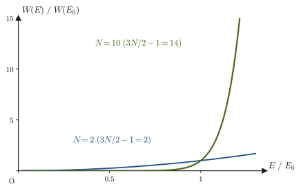
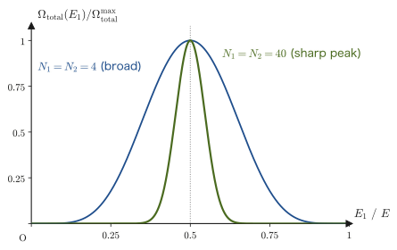
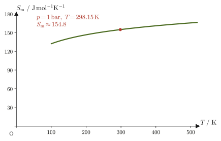
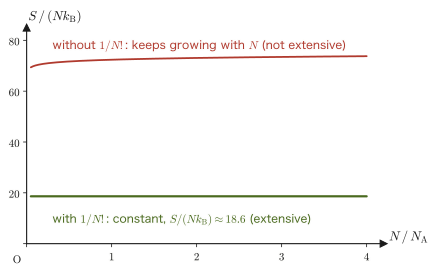
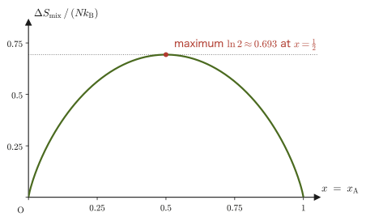
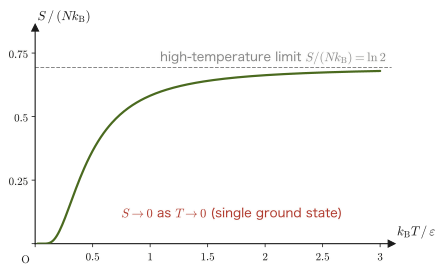

Chapter 49Thermodynamic Weight and Boltzmann's Principle
In the previous chapter, using the same idea as enumerating the outcomes of coin tosses and dice rolls, we built the foundation of “how to count microstates” for a system made up of an enormous number of particles such as gas molecules—phase space, the ergodic hypothesis, and the principle of equal a priori probability. But having built only a foundation, we have not yet arrived at any “measurable quantity.” How, then, are quantities that can be measured in the laboratory, such as pressure and temperature, connected with the number of states in phase space?
In this chapter we arrive at Boltzmann's answer to this question—the most famous relation in statistical mechanics, $S=k_{\mathrm B}\ln W$, which says that the logarithm of the number $W$ of microstates is proportional to the thermodynamic entropy $S$. Taking a monatomic ideal gas as a concrete example, we actually compute the phase-space volume and derive the temperature and the entropy from it. Boltzmann's grave in the Vienna Central Cemetery has this formula engraved on it.
In the course of the derivation, by considering what happens when two systems are brought into contact, we redefine what temperature is in the language of statistical mechanics. When the same idea is extended to partial derivatives with respect to the volume and the number of particles, we find that the pressure and the chemical potential (the quantity that expresses the change in energy when one particle is added) also arise from $S$.
Finally, we write down the entropy of an ideal gas as an explicit formula (the Sackur–Tetrode equation), and we see that the seemingly trivial caution “do not distinguish identical particles”—the Gibbs paradox—actually requires a factor $1/N!$ (the reciprocal of the factorial of $N$) in the very definition of $S=k_{\mathrm B}\ln W$. We also answer the question of how the third law of thermodynamics (the entropy at absolute zero), which we learned in Chapter 32, looks from the microscopic point of view.
- Actually compute the thermodynamic weights $\Omega(E),W(E)=\dd\Omega/\dd E$ for a monatomic ideal gas as volumes in phase space
- Derive Boltzmann's principle $S=k_{\mathrm B}\ln W$ without skipping a single line of calculation, and arrive at the statistical temperature $1/T=(\partial S/\partial E)_V$
- Understand the extensivity (additivity) of the entropy and the fact that the two definitions $S=k_{\mathrm B}\ln\Omega(E)$ and $S=k_{\mathrm B}\ln[W(E)\Delta E]$ give the same result in the thermodynamic limit
- From the “most probable partition” when two systems are brought into thermal contact, extend the statistical definition of temperature to general systems, and understand the pressure and the chemical potential, too, in a unified way as partial derivatives of $S$
- Derive the entropy of an ideal gas (the Sackur–Tetrode equation) from the volume of the $n$-dimensional ball and Stirling's formula of Chapter 47
- Understand the Gibbs paradox, the necessity of $1/N!$, and the entropy of mixing, and learn the statistical-mechanical meaning of the third law of thermodynamics (Chapter 32)
Source notes: Yasuhide Mochizuki, Physics Notes: Statistical Mechanics, pp. 7–8.
Review: Thermodynamic relations and the micro⇔macro correspondence table
From this chapter on, the quantity that was written $U$ for the internal energy in Part IV (Thermodynamics) is written $E$, following the convention of statistical mechanics (it is the same quantity). We list the thermodynamic relations together with their statistical-mechanical counterparts derived in this chapter. In the sections below we derive the relations in the right-hand column one by one.
| Quantity / relation | Thermodynamics (Part IV) | Statistical mechanics (this chapter and the next) |
|---|---|---|
| First law (reversible change) | $\dd U=T\dd S-p\dd V\ (+\mu\dd N)$ | $\dd E=T\dd S-p\dd V+\mu\dd N$ ($U\to E$) |
| Entropy | $\dd S=\dd'Q/T$ (Chapter 29) | $S=k_{\mathrm B}\ln W$ (Section 49.2) |
| Temperature | $\left(\pdiff{U}{S}\right)_V=T$ | $\dfrac1T=\left(\pdiff SE\right)_{V,N}$ (Section 49.4) |
| Pressure | $p=-\left(\pdiff UV\right)_S$ | $\dfrac pT=\left(\pdiff SV\right)_{E,N}$ (Section 49.5) |
| Chemical potential | $\mu=\left(\pdiff UN\right)_{S,V}$ | $-\dfrac\mu T=\left(\pdiff SN\right)_{E,V}$ (Section 49.5) |
| Helmholtz free energy | $A=U-TS$ (Chapter 30) | $A=-k_{\mathrm B}T\ln Z$ (next chapter, Chapter 50) |
| Third law | $S\to S_0$ as $T\to0$ (Chapter 32) | $S_0=k_{\mathrm B}\ln W_0$ (Section 49.8) |
49.1 The Thermodynamic Weights $\Omega(E)$ and $W(E)$ — The Phase-Space Volume of an Ideal Gas
In the previous chapter we learned that, in the phase space of an isolated system (Section 48.2)—the space obtained by gathering, as many times as there are particles, the space formed by the pair of the position $q$ and the momentum $p$ of one particle—a single microstate occupies, by the uncertainty principle of quantum mechanics, one “cell” of volume $h^{3N}$ (here $h=6.626\,070\,15\times10^{-34}\ \mathrm{J\,s}$ is the Planck constant, an exact (defined) value, and has the same unit as the product of $q$ and $p$, $\mathrm{m\cdot kg\,m/s}=\mathrm{J\,s}$. $N$ is the number of particles. Each gas molecule has three position components and three momentum components, six coordinates in all (it has three degrees of freedom), so $N$ molecules give a $6N$-dimensional phase space. The position space and the momentum space are each $3N$-dimensional). We also introduced the convention of dividing the resulting count by $N!$ (the factorial of $N$, the number of permutations of $N$ particles), so that configurations that differ only by an exchange of particles of the same kind are not counted repeatedly as different microstates. In Section 48.6 we previewed that result (Formula 48.3) and how to use it. In this section we follow each stage of its derivation carefully, one step at a time, to verify the expression for “the total number $\Omega(E)$ of microstates with energy at most $E$,” and then differentiate with respect to $E$ to obtain the thermodynamic weight $W(E)$. The dependence of $W(E)$ on $E$ ($E^{3N/2-1}$) will be central to the sections that follow.
Definition 49.1: The thermodynamic weights $\Omega(E)$ and $W(E)$
For an isolated thermodynamic system, let $\Omega(E)$ be the total number of microstates with energy at most $E$, as introduced in Chapter 48. Then its derivative with respect to $E$
\begin{equation} W(E)\equiv\diff{\Omega}{E} \label{eq:49-W-def} \end{equation}is called the thermodynamic weight of the system. $W(E)$ is a density expressing “how many microstates are packed into the narrow range of width $\dd E$ just around the energy $E$,” and $W(E)\,\Delta E$ approximately represents the number of microstates contained in the range of energies from $E$ to $E+\Delta E$ (the energy shell).
To find $\Omega(E)$, we need only divide the volume of the region of phase space satisfying the condition “the energy is at most $E$” by the volume $h^{3N}$ occupied by one microstate (and by $N!$, which removes the double counting of identical particles). There are $N$ gas molecules, and each one has three position components $(q_{3i-2},q_{3i-1},q_{3i})$ and three momentum components $(p_{3i-2},p_{3i-1},p_{3i})$ ($i=1,\dots,N$) (for the first molecule these are $(q_1,q_2,q_3)$, for the second $(q_4,q_5,q_6)$, …, and for the $N$th $(q_{3N-2},q_{3N-1},q_{3N})$; the momenta are similar), so altogether there are $3N$ position coordinates $q_1,\dots,q_{3N}$ and $3N$ momentum coordinates $p_1,\dots,p_{3N}$. Therefore we have the integral
\begin{equation} \Omega(E)=\frac{1}{N!\,h^{3N}}\int\cdots\int\dd q_1\cdots\dd q_{3N}\,\dd p_1\cdots\dd p_{3N} \qquad\cdots\ \text{Ⓐ} \label{eq:49-omega-integral} \end{equation}(the range of integration is the region satisfying the condition that “the Hamiltonian (the function giving the mechanical energy; Chapter 45) is at most $E$”). Since the integral over the position coordinates and the integral over the momentum coordinates can be carried out independently of each other as long as the integrand is a constant ($1$), Eq. \eqref{eq:49-omega-integral} can be written as a product of an integral over position space and an integral over momentum space, as follows (Figure 49.1):
\begin{equation} \Omega(E)=\frac{1}{N!\,h^{3N}}\left(\int\cdots\int\dd q_1\cdots\dd q_{3N}\right)\left(\int\cdots\int\dd p_1\cdots\dd p_{3N}\right) \label{eq:49-omega-split} \end{equation}From here on, we take this system to be a monatomic ideal gas confined in a box of volume $V$. Because it is an “ideal gas,” the molecules exert no forces on one another (the potential energy due to intermolecular forces is $0$), and because the molecules are “monatomic,” the mechanical energy of a single molecule is only the kinetic energy of its translational motion.
Derivation: $\Omega(E)$ and $W(E)$ for a monatomic ideal gas
The integral over position space (Eq. Ⓑ). A molecule may be anywhere in the box (of volume $V$), and this has no bearing on the energy. The integral $\iiint\dd q_1\dd q_2\dd q_3$ over the position coordinates $(q_1,q_2,q_3)$ of one molecule is the volume of the box itself, that is, $V$. Since each of the $N$ molecules may independently be anywhere in the box, the integral over the $3N$ position coordinates is the integral for one molecule multiplied together $N$ times:
\begin{equation} \int\cdots\int\dd q_1\cdots\dd q_{3N}=\left(\iiint\dd q_1\dd q_2\dd q_3\right)^{N}=V^{N} \qquad\cdots\ \text{Ⓑ} \label{eq:49-position-integral} \end{equation}The integral over momentum space (Eq. Ⓒ). The Hamiltonian of a monatomic ideal gas (the mechanical energy, $H=T+U$, learned in Chapter 45) consists only of the kinetic energy, because the potential energy is $U=0$:
$$ H=\sum_{i=1}^{3N}\frac{p_i^2}{2m}+0 $$(Here $m$ is the mass of one molecule. The sum $\sum_{i=1}^{3N}p_i^2$ is the total of the sums of squares of the three momentum components of each of the $N$ molecules, that is, the total kinetic energy of all the molecules multiplied by $2m$.) Using this expression, the condition “the energy is at most $E$,” $H\le E$, can be rewritten as
$$ \sum_{i=1}^{3N}p_i^2\le 2mE=\left(\sqrt{2mE}\right)^2 $$This is nothing other than the condition that, in the $3N$-dimensional momentum space $(p_1,\dots,p_{3N})$, the (square of the) distance from the origin is at most $2mE$, that is, that the point lies inside the $3N$-dimensional ball of radius $\sqrt{2mE}$ (the boundary included). The integral over the momentum coordinates is therefore exactly the volume of the $3N$-dimensional ball of radius $\sqrt{2mE}$. Here we use the formula for the volume of an $n$-dimensional ball proved in Chapter 47 (Section 47.1, Formula 47.1):
$$ V_n(R)=\frac{\pi^{n/2}}{\Gamma\!\left(\dfrac{n}{2}+1\right)}R^{n}=\frac{\pi^{n/2}}{\left(\dfrac{n}{2}\right)\Gamma\!\left(\dfrac{n}{2}\right)}R^{n} $$(The second equality uses the recurrence relation of the gamma function, $\Gamma(z+1)=z\,\Gamma(z)$, University Mathematics, Section 32.2, with $z=n/2$. In this section we use the denominator in the form $\left(\frac n2\right)\Gamma\!\left(\frac n2\right)$ as it stands. $\Gamma(z)$ (the gamma function) is a function that extends the factorial to non-integer numbers, with $\Gamma(n+1)=n!$ and $\Gamma(\tfrac12)=\sqrt\pi$. By the recurrence relation, $\left(\frac n2\right)\Gamma\!\left(\frac n2\right)=\Gamma\!\left(\frac n2+1\right)$, so for $n=3N$ the denominator can be read as $\left(\frac{3N}{2}\right)!$. As a check, setting $n=3$ and using $\Gamma(\tfrac32)=\tfrac12\sqrt\pi$ gives $V_3(R)=\pi^{3/2}R^3\big/\bigl(\tfrac32\cdot\tfrac12\sqrt\pi\bigr)=\tfrac43\pi R^3$, which agrees with the familiar volume of a ball.) Substituting $n=3N$ (the dimension) and $R=\sqrt{2mE}$ (the radius) into this formula, we find that
\begin{equation} \int\cdots\int\dd p_1\cdots\dd p_{3N}=\frac{\pi^{\frac{3N}{2}}}{\left(\dfrac{3N}{2}\right)\Gamma\!\left(\dfrac{3N}{2}\right)}\left(\sqrt{2mE}\right)^{3N} \qquad\cdots\ \text{Ⓒ} \label{eq:49-momentum-integral} \end{equation}holds.
The final form of $\Omega(E)$. Substituting Eqs. Ⓑ and Ⓒ into Eq. \eqref{eq:49-omega-split}, we obtain
\begin{equation} \Omega(E)=\frac{1}{N!\,h^{3N}}\,V^{N}\cdot\frac{\pi^{\frac{3N}{2}}}{\left(\dfrac{3N}{2}\right)\Gamma\!\left(\dfrac{3N}{2}\right)}\,(2m)^{\frac{3N}{2}}\,E^{\frac{3N}{2}} \label{eq:49-omega-final} \end{equation}We have found that $\Omega(E)$ is proportional to $E^{3N/2}$ (note that the exponent is not $3N$ but half of it).
Computing $W(E)=\dd\Omega/\dd E$. In Eq. \eqref{eq:49-omega-final}, the only part that depends on $E$ is the last factor $E^{3N/2}$, and everything else is a constant (a quantity determined by $N,V,m,h$ and independent of $E$). Using the differentiation formula for power functions, $\dd(x^a)/\dd x=ax^{a-1}$ (exactly the basic differentiation formula learned in University Mathematics, Section 3.3), we obtain
\begin{equation} W(E)=\diff{\Omega}{E}=\underbrace{\frac{3N}{2}\cdot\frac{1}{N!\,h^{3N}}\,V^{N}\cdot\frac{\pi^{\frac{3N}{2}}}{\left(\dfrac{3N}{2}\right)\Gamma\!\left(\dfrac{3N}{2}\right)}\,(2m)^{\frac{3N}{2}}}_{\text{constant}\ C_0}\cdot E^{\frac{3N}{2}-1}=C_0\,E^{\frac{3N}{2}-1} \label{eq:49-W-final} \end{equation}In the coefficient, the $\dfrac{3N}{2}$ cancels against the $\left(\dfrac{3N}{2}\right)\Gamma\!\left(\dfrac{3N}{2}\right)$ in the denominator, leaving only $\Gamma(3N/2)$, so we may also write $C_0=\dfrac{V^{N}}{N!\,h^{3N}}\cdot\dfrac{\pi^{3N/2}(2m)^{3N/2}}{\Gamma(3N/2)}$.
∎
Formula 49.1: Thermodynamic weight of a monatomic ideal gas
For a monatomic ideal gas consisting of $N$ molecules of mass $m$ confined in a box of volume $V$, the number of states with energy at most $E$ and the thermodynamic weight are given by
\begin{equation} \Omega(E)=\frac{V^{N}}{N!\,h^{3N}}\cdot\frac{\pi^{\frac{3N}{2}}}{\left(\dfrac{3N}{2}\right)\Gamma\!\left(\dfrac{3N}{2}\right)}\,(2mE)^{\frac{3N}{2}},\qquad W(E)=C_0\,E^{\frac{3N}{2}-1} \label{eq:49-formula-omega-w} \end{equation}(Here $C_0$ is the constant, independent of $E$, defined in Eq. \eqref{eq:49-W-final}.)
Caution: What happens if we forget $1/N!$
Even if we omitted the $1/N!$ in Eq. \eqref{eq:49-omega-integral}, the form of the calculation so far ($\Omega(E)\propto E^{3N/2}$, $W(E)\propto E^{3N/2-1}$) would not change—$N!$ is a constant that does not depend on $E$. However, omitting $1/N!$ leads to a serious contradiction, the “Gibbs paradox,” which we shall see later in Section 49.7 (the physically impossible conclusion that the entropy comes out different depending on whether we mix the same gas or not). Why $1/N!$ is necessary will be checked concretely in Section 49.7.
Example 49.1: Computing $\Omega(E)$ explicitly for $N=2$ ($3N=6$ dimensions)
Consider a monatomic ideal gas with only $N=2$ molecules (unrealistic, but useful for checking concretely what is inside Eq. \eqref{eq:49-formula-omega-w}), and compute $\Omega(E)$ step by step starting from Eq. \eqref{eq:49-omega-split}.
Solution. Since $N=2$, there are $3N=6$ position coordinates and the same number of momentum coordinates.
The integral over position space. By Eq. \eqref{eq:49-position-integral}, $\displaystyle\int\cdots\int\dd q_1\cdots\dd q_6=V^2$.
The integral over momentum space. We substitute $R=\sqrt{2mE}$ into the volume formula for a ball in $n=3N=6$ dimensions. Since $\Gamma(3)=2!=2$ (this is the property $\Gamma(n+1)=n!$ of the gamma function from University Mathematics, Section 32.2, in the case $n=2$),
$$ V_6(R)=\frac{\pi^{3}}{3\,\Gamma(3)}R^{6}=\frac{\pi^{3}}{3\times2}R^{6}=\frac{\pi^3}{6}R^6 $$(This is the six-dimensional version of the “volume $\frac43\pi r^3$ of a ball of radius $r$” familiar from high school mathematics; indeed, substituting $n=3$ into the same formula gives $V_3(R)=\pi^{3/2}R^3/(\frac32\Gamma(\frac32))=\frac43\pi R^3$, which agrees with it—this is the usual volume formula for a ball in three dimensions.) Substituting $R=\sqrt{2mE}$, the integral over momentum space becomes $\dfrac{\pi^3}{6}(2mE)^3=\dfrac{8\pi^3 m^3E^3}{6}=\dfrac{4\pi^3m^3E^3}{3}$.
Summary. Multiplying the integrals over position space and momentum space and dividing by $N!=2!=2$ and $h^{3N}=h^6$, we obtain
$$ \Omega(E)=\frac{1}{2!\,h^6}\times V^2\times\frac{4\pi^3m^3E^3}{3}=\frac{2\pi^3m^3V^2}{3h^6}E^3 $$We can confirm that the exponent indeed agrees with that of the general form of Eq. \eqref{eq:49-formula-omega-w} with $N=2$ ($\Omega(E)\propto E^{3N/2}=E^3$).
Example 49.2: Checking the dimensions (units) of $\Omega(E)$ and $W(E)$
Verify that $\Omega(E)$ in Eq. \eqref{eq:49-omega-integral} is dimensionless (has no units; it is just a number), and use this to show that $W(E)=\dd\Omega/\dd E$ has the dimension of the inverse of energy.
Solution. The dimension of the position coordinate $q_i$ is length $[\mathrm{m}]$, and the dimension of the momentum coordinate $p_i$ is $[\mathrm{kg\,m/s}]$. Therefore the dimension of $\dd q_i\,\dd p_i$ is $[\mathrm{m}]\times[\mathrm{kg\,m/s}]=[\mathrm{kg\,m^2/s}]$, which coincides exactly with the dimension of the Planck constant $h$ (the dimension of action, $h=6.626\,070\,15\times10^{-34}\ \mathrm{J\,s}=6.626\,070\,15\times10^{-34}\ \mathrm{kg\,m^2/s}$) (this dimension is called the dimension of action). Therefore $\dd q_i\,\dd p_i/h$ is dimensionless, and $\Omega(E)$, which is the product of $3N$ such factors (dividing by $N!$ does not change its being dimensionless), is also dimensionless. When the dimensionless quantity $\Omega$ is differentiated with respect to the energy $E$ (of dimension $[\mathrm{J}]$), then by the rule for the dimension of a quotient (from the definition of the derivative, $\dd f/\dd x=\lim_{\Delta x\to0}\Delta f/\Delta x$, learned in University Mathematics, Section 1.6, the dimension of $\dd f/\dd x$ is “the dimension of $f$” divided by “the dimension of $x$”), the dimension of $W(E)=\dd\Omega/\dd E$ is $[\text{dimensionless}]/[\mathrm J]=\mathrm{J^{-1}}$ (the inverse of energy). Therefore $W(E)\,\Delta E$ ($\Delta E$ has the dimension of $\mathrm J$) is dimensionless—indeed a quantity that makes sense as a “number of states.”
49.2 Boltzmann's Principle $S=k_{\mathrm B}\ln W$
The expression $W(E)=C_0E^{3N/2-1}$ obtained in Eq. \eqref{eq:49-W-final} grows at an almost unbelievable rate as $N$ becomes large (Figure 49.2). Even for an unrealistically small gas of $N=10$ particles, the exponent is already $14$. A real gas contains $N\approx N_{\mathrm A}=6.02\times10^{23}$ molecules per $1\ \mathrm{mol}$, so the exponent $3N/2-1$ is about $9\times10^{23}$, an astronomically large number. It is not practical to handle such an enormous number directly, and to measure “by what factor the number of states changes when the energy changes slightly,” the logarithm (a function that converts multiplication and division into addition and subtraction; High School Mathematics, Chapter 6) is easier to work with than multiplication and division. Boltzmann saw that the logarithm of this huge number of states is precisely what the entropy $S$ of thermodynamics really is.
Another reason for using the logarithm is that entropy is a quantity that becomes a sum when two systems are combined, whereas the number of states becomes a product. The logarithm is the function that converts a product into a sum, and it is therefore the appropriate function to connect the two (we verify this in Section 49.3.1). Moreover, in an isolated system a change can proceed only in the direction in which the number of states $W$ increases—this corresponds to the second law of thermodynamics, which states that changes proceed only in the direction in which the entropy increases (the increase of entropy).

Let us confirm once more what it is that we are counting. What interests us is not the states with exactly a specific energy $E$, but the collection of states corresponding to the “energy in that neighborhood” measured in an experiment. We therefore consider the number of states whose energy lies in the range from $E$ to $E+\Delta E$ (the energy shell, Figure 49.3). Using $W(E)=\dd\Omega/\dd E$ of Definition 49.1, this can be written approximately as $W(E)\,\Delta E$.
Law 49.1: Boltzmann's principle
If the number of states of a system whose energy lies in the range $[E,E+\Delta E]$ is $W\,(=W(E)\,\Delta E)$, then the entropy $S$ of the system is given by
\begin{equation} S=k_{\mathrm B}\ln W \label{eq:49-boltzmann-principle} \end{equation}where $k_{\mathrm B}=1.380\,649\times10^{-23}\ \mathrm{J/K}$ is the Boltzmann constant (the exact (defined) value in the 2019 SI).
Let us verify that this equation really holds for a monatomic ideal gas, using the results of the previous section.
Derivation: $S=k_{\mathrm B}\ln W$ (for a monatomic ideal gas)
From Eq. \eqref{eq:49-W-final}, the number of states in the energy shell is
$$ W=W(E)\,\Delta E=\underbrace{C_0\,\Delta E}_{\text{constant}\ C}\,E^{\frac{3N}{2}-1} $$(since neither $C_0$ nor $\Delta E$ depends on $E$, the product $C\equiv C_0\Delta E$ is also a constant independent of $E$). Taking the logarithm of this expression and using the properties of the logarithm $\ln(xy)=\ln x+\ln y$ and $\ln(x^a)=a\ln x$ (High School Mathematics, Chapter 6), we obtain
$$ \ln W=\left(\frac{3N}{2}-1\right)\ln E+\ln C $$(Because $E$ has the unit $\mathrm J$, the argument of $\ln E$ seems not to be dimensionless; however, $C$ has a unit that cancels the unit of $E^{3N/2-1}$, so the product $W$ as a whole is dimensionless. Even if we reinterpret it as $\ln(E/E_0)$ using a reference energy $E_0$, differentiation with respect to $E$ gives the same result.) Differentiating both sides with respect to $E$, the derivative of $\ln C$ is $0$ because it is a constant independent of $E$ (the basic formulas of differentiation, University Mathematics, Section 3.3), so
$$ \diff{}{E}(\ln W)=\diff{}{E}\left\{\left(\frac{3N}{2}-1\right)\ln E+\ln C\right\}=\left(\frac{3N}{2}-1\right)\frac1E $$Here $N$ is an enormous number, $N_{\mathrm A}\approx6\times10^{23}$ per $1\ \mathrm{mol}$, so the $-1$ in $3N/2-1$ is only about $10^{-24}$ relative to $3N/2$ (which is of the order of magnitude $\sim10^{23}$), and may be neglected (we check this numerically in Example 49.3). Therefore,
\begin{equation} \diff{}{E}(\ln W)=\left(\frac{3N}{2}-1\right)\frac1E\fallingdotseq\frac{3N}{2E} \qquad\cdots\ \text{Ⓔ} \label{eq:49-dlnW-dE} \end{equation}is obtained ($\fallingdotseq$ is the symbol meaning “approximately equal”).
Recall: The definition of the statistical temperature
The $E$ appearing here is the sum of the kinetic energies of the molecules, which is precisely the internal energy of thermodynamics. From the kinetic theory of gases and the law of equipartition of energy (Section 24.3, Law 24.2 and Formula 24.2), the internal energy of a monatomic ideal gas is already known to be
$$ E=\frac32nRT=\frac32\underbrace{nN_{\mathrm A}}_{N}\cdot\underbrace{\frac{R}{N_{\mathrm A}}}_{k_{\mathrm B}}\cdot T=\frac32Nk_{\mathrm B}T \qquad\cdots\ \text{Ⓕ} $$(where $n$ is the number of moles, $R$ is the gas constant, $N=nN_{\mathrm A}$ is the total number of molecules, and $k_{\mathrm B}=R/N_{\mathrm A}$ is the Boltzmann constant). Seen from a different angle, this equation guarantees that “the absolute temperature $T$ defined by the kinetic theory of gases (familiar since high school physics)” also has meaning in the language of statistical mechanics—this is the meaning of the statistical temperature. Eq. Ⓕ, $E=\frac32Nk_{\mathrm B}T$, is also the defining equation of the temperature $T$ in statistical mechanics. $T$ is a quantity linked to the internal energy by this relation, and it is the starting point for the comparison of Ⓖ and Ⓗ below (the definition for a general system is Definition 49.2 in Section 49.4).
Substituting Eq. Ⓕ into Eq. \eqref{eq:49-dlnW-dE} (Eq. Ⓔ) gives
$$ \diff{}{E}(\ln W)=\frac{3N}{2E}=\frac{3N}{2\times\frac32Nk_{\mathrm B}T}=\frac{1}{k_{\mathrm B}T} $$Multiplying both sides by $k_{\mathrm B}$ (a constant), we obtain
\begin{equation} \diff{}{E}(k_{\mathrm B}\ln W)=\frac{1}{T} \qquad\cdots\ \text{Ⓖ} \label{eq:49-dklnW-dE} \end{equation}Now recall the first law of thermodynamics (for a reversible change; at constant volume the work is zero. Chapter 29), $\dd E=T\dd S-p\dd V$. When we vary only $E$ (and hence $S$) while holding the volume $V$ constant, $\dd V=0$, so $\dd E=T\dd S$, that is,
$$ \left(\pdiff{E}{S}\right)_V=T $$The notation $(\cdot)_V$ for a partial derivative means “with $V$ held constant” (University Mathematics, Section 6.2). Using the relation for the derivative of an inverse function ($\dd y/\dd x=1/(\dd x/\dd y)$ also holds for partial derivatives; see likewise Section 6.2), we can rewrite this as
\begin{equation} \left(\pdiff{S}{E}\right)_V=\frac1T \qquad\cdots\ \text{Ⓗ} \label{eq:49-dSdE} \end{equation}Comparing Eq. Ⓖ and Eq. Ⓗ, we see that both state the same property—“differentiating with respect to $E$ gives $1/T$”—of the two quantities $k_{\mathrm B}\ln W$ and $S$. From this we can conclude that $S=k_{\mathrm B}\ln W$. Let us check this a little more carefully, in the following four steps.
- Dependence on $E$: Since the results of differentiating with respect to $E$ always coincide (at the same volume and number of particles), the difference $S-k_{\mathrm B}\ln W$ does not depend on $E$ and is a quantity determined by $V$ and $N$ alone.
- Dependence on $V$: From $W\propto V^N$ we have $\partial(k_{\mathrm B}\ln W)/\partial V=Nk_{\mathrm B}/V$, which agrees with $p/T=Nk_{\mathrm B}/V$ ($=\partial S/\partial V$, Section 49.5) obtained from the equation of state of an ideal gas $pV=Nk_{\mathrm B}T$ (Chapter 23) (in Example 49.7 we follow this relation in the reverse direction). Hence the difference does not depend on $V$ either, and is a function of the number of particles $N$ alone.
- The remaining constant: Thermodynamics alone determines the entropy only up to a constant (the constant of integration $\alpha_0$ in Section 29.2). We therefore set the last remaining “function of $N$ alone” equal to $0$. In other words, we choose the constants so that no difference remains:
- Confirming this choice: That this choice is legitimate is confirmed by the later discussions in this chapter—that the entropies of independent systems add (Section 49.3), that the Sackur–Tetrode equation reproduces the experimental values (Example 49.8), and that the entropy becomes $0$ at absolute zero (Section 49.8).
Thus, as for the dependence on $E$ (the definition of temperature) and the dependence on $V$ (the equation of state), we have confirmed that Boltzmann's principle agrees completely with thermodynamics for a monatomic ideal gas. This is what Law 49.1 (Boltzmann's principle) asserts.
∎
Intuition: The flow of the argument so far
We summarize the path so far in four steps. From “counting microscopic states,” the macroscopic quantity called “entropy” emerges—this is the basic idea of statistical mechanics.
- Count the states in phase space: From the integral over positions, $V^N$, and the integral over momenta (a $3N$-dimensional ball), find $\Omega(E)$ and $W(E)$ (Section 49.1).
- Take the logarithm and differentiate with respect to $E$: $\dd(\ln W)/\dd E\fallingdotseq3N/(2E)$.
- Compare with thermodynamics: Using $E=\frac32Nk_{\mathrm B}T$ gives $\dd(k_{\mathrm B}\ln W)/\dd E=1/T$, which has the same form as the thermodynamic relation $(\partial S/\partial E)_V=1/T$.
- Conclusion: $S=k_{\mathrm B}\ln W$. The microscopic number of states ($W$) and the macroscopic entropy ($S$) are linked.
Boltzmann's principle $S=k_{\mathrm B}\ln W$ is the most important equation in statistical mechanics: it links a microscopic quantity (the number $W$ of states counted in phase space) and a macroscopic quantity (the entropy $S$ introduced from the second law of thermodynamics). Here we have verified it concretely for a monatomic ideal gas, but Max Planck pointed out that this relation is a universal principle that holds not only for ideal gases but for every thermodynamic system. From now on, this book uses Eq. \eqref{eq:49-boltzmann-principle} as the fundamental principle for general systems, not limited to ideal gases.
Example 49.3: Validity of the approximation of “neglecting $-1$”
For $N=N_{\mathrm A}\approx6.022\times10^{23}$, find the relative error $\left|\dfrac{(3N/2)-(3N/2-1)}{3N/2-1}\right|$ between $3N/2-1$ and $3N/2$, and evaluate how well the approximation of neglecting $-1$ in Eq. \eqref{eq:49-dlnW-dE} is justified.
Solution. The relative error is $\dfrac{1}{3N/2-1}\fallingdotseq\dfrac{2}{3N}$. Substituting $N=N_{\mathrm A}\approx6.022\times10^{23}$, we obtain
$$ \frac{2}{3N_{\mathrm A}}\approx\frac{2}{3\times6.022\times10^{23}}\approx1.11\times10^{-24} $$This means that the two agree to the 24th digit, an error so small that it is of absolutely no practical concern. In general, approximations of the type “using the fact that $N$ is large, neglect terms of constant size compared with $N$ (such as $-1$ or $+2$)” appear everywhere in statistical mechanics, and thanks to the enormous size $N\sim10^{23}$, such approximations are almost always justified.
Example 49.4: Entropy change when $W$ doubles
Suppose that the number of states $W$ of a system becomes exactly twice as large through some change. Find the entropy change $\Delta S$ in this case, and compute its numerical value.
Solution. By Law 49.1, $S=k_{\mathrm B}\ln W$, when the number of states changes as $W\to2W$, the entropy change is
$$ \Delta S=k_{\mathrm B}\ln(2W)-k_{\mathrm B}\ln W=k_{\mathrm B}\ln\frac{2W}{W}=k_{\mathrm B}\ln2 $$(we used the property of the logarithm $\ln(2W)-\ln W=\ln(2W/W)=\ln2$. Note that the result does not depend on the size of $W$ itself). Substituting numerical values, we obtain
$$ \Delta S=k_{\mathrm B}\ln2=1.380\,649\times10^{-23}\times0.6931\approx9.57\times10^{-24}\ \mathrm{J/K} $$A microscopically simple change, “the number of states doubles,” corresponds macroscopically to an increase in entropy by the definite amount $k_{\mathrm B}\ln2$—this is a famous value that is often quoted as the physical meaning of “one bit of information” (the entropy corresponding to the resolution, or conversely the creation, of the uncertainty of a single binary choice).
Boltzmann's principle $S=k_{\mathrm B}\ln W$ is widely known as an equation that symbolizes the character of the field of statistical mechanics. On Boltzmann's grave in the Vienna Central Cemetery (Wiener Zentralfriedhof) in Austria, this equation is engraved on the pedestal beneath his bust in the form
$$ S=k_{\mathrm B}\cdot\log W $$($\log$ is used here to mean the natural logarithm $\ln$, the same as $\ln$ in this book. Also, $W$ is said to be the initial letter of the German word for probability, Wahrscheinlichkeit). Boltzmann himself showed in the 1870s that entropy is related to (the logarithm of) the number of states. It is said that it was Planck, who was studying black-body radiation (around 1900), who first wrote down the form $S=k_{\mathrm B}\ln W$ connected by an equals sign, together with the constant $k_{\mathrm B}$. The grave monument with the bust is said to have been erected in the 1930s, after Boltzmann's death (he died in 1906). The insight that “entropy is the logarithm of the number of microscopic states” is Boltzmann's greatest contribution to statistical mechanics, and it is most fitting that this equation adorns his gravestone.
49.3 General Properties of Entropy — Extensivity and the Equivalence of the Two Definitions
Now that we can use Boltzmann's principle $S=k_{\mathrm B}\ln W$, let us use it to confirm two general properties of entropy. The first is the additivity (extensivity) of entropy, that is, how entropy behaves when several systems are combined. The second is the equivalence of the two definitions: we obtain the same result whether we substitute into $S=k_{\mathrm B}\ln(\cdot)$ the “number of states of the energy shell, $W(E)\Delta E$,” which we have used so far in this chapter, or the “cumulative number of states $\Omega(E)$,” which was first defined in Section 49.1.
49.3.1 Extensivity and additivity of entropy
Consider two completely unrelated systems, 1 and 2 (they exert no forces on each other and exchange no energy). Suppose that system 1 has $\Omega_1$ microstates and system 2 has $\Omega_2$ microstates. If we regard the two together as a single composite system, “system 1 + system 2,” how many microstates does the composite system have (Figure 49.4)? (Here we write the number of states as $\Omega$; the reason we may use $\Omega$—namely, that using the number of states of the energy shell, $W\Delta E$, gives the same result—will be confirmed in the next section, Section 49.3.2.)
Intuition: Why is the number of states a product?
There are $\Omega_1$ ways to choose one state of system 1, and whichever one we choose, there are $\Omega_2$ ways, independently of that choice, to choose a state of system 2. This is exactly the product rule learned under “counting” (the number of cases) in high school mathematics (the fact that the probabilities of independent trials multiply, University Mathematics, Section 13.5, or the same idea as the way of counting coin tosses in Chapter 48)—for example, if system 1 has two possible states, “$A$ or $B$,” and system 2 has three possible states, “$1,2,3$,” the composite system has the $2\times3=6$ states $(A,1),(A,2),(A,3),(B,1),(B,2),(B,3)$. In general, when independent systems are combined, the number of states is obtained by multiplication.
Theorem 49.1: Additivity of entropy (extensivity)
The total number of microstates of the composite system formed by combining two mutually independent systems 1 and 2 (which exchange neither energy nor matter) is given by
\begin{equation} \Omega_{1+2}=\Omega_1\,\Omega_2 \label{eq:49-omega-product} \end{equation}If we apply Boltzmann's principle (Law 49.1) to this composite system, the entropy $S_{1+2}$ of the composite system satisfies
\begin{equation} S_{1+2}=S_1+S_2 \label{eq:49-entropy-additive} \end{equation}That is, entropy is an extensive variable (a quantity that increases in proportion to the size of the system, in contrast to intensive variables such as pressure and temperature, which are quantities independent of the size of the system).
Derivation: $S_{1+2}=S_1+S_2$
Applying Boltzmann's principle to the composite system and substituting Eq. \eqref{eq:49-omega-product}, we have
$$ S_{1+2}=k_{\mathrm B}\ln\Omega_{1+2}=k_{\mathrm B}\ln(\Omega_1\Omega_2) $$By the property of the logarithm $\ln(xy)=\ln x+\ln y$ (High School Mathematics, Chapter 6),
$$ S_{1+2}=k_{\mathrm B}\left(\ln\Omega_1+\ln\Omega_2\right)=k_{\mathrm B}\ln\Omega_1+k_{\mathrm B}\ln\Omega_2=S_1+S_2 $$is obtained.
∎
Caution: Additivity and extensivity are separate requirements
What Theorem 49.1 showed is that the entropies of two independent (unrelated) systems simply add (additivity). The extensivity property, “$S(2E,2V,2N)=2S(E,V,N)$ when the same system is doubled in its entirety,” is a separate and stronger requirement, and it fails unless the way of counting identical particles ($1/N!$) is included correctly (Section 49.7).
Example 49.5: Numerical check of additivity
Suppose that the number of states of system 1 is $\Omega_1=10^{10}$ and that of system 2 is $\Omega_2=10^{20}$. Find the entropies $S_1,S_2$ of the two systems and the entropy $S_{1+2}$ of the composite system, and confirm that $S_{1+2}=S_1+S_2$ holds.
Solution. By Law 49.1,
$$ S_1=k_{\mathrm B}\ln(10^{10})=10k_{\mathrm B}\ln10,\qquad S_2=k_{\mathrm B}\ln(10^{20})=20k_{\mathrm B}\ln10 $$Using $k_{\mathrm B}=1.380\,649\times10^{-23}\ \mathrm{J/K}$ and $\ln10\approx2.3026$, we obtain
$$ S_1\approx3.179\times10^{-22}\ \mathrm{J/K},\qquad S_2\approx6.358\times10^{-22}\ \mathrm{J/K} $$The number of states of the composite system is $\Omega_{1+2}=\Omega_1\Omega_2=10^{10}\times10^{20}=10^{30}$, so
$$ S_{1+2}=k_{\mathrm B}\ln(10^{30})=30k_{\mathrm B}\ln10\approx9.537\times10^{-22}\ \mathrm{J/K} $$On the other hand, $S_1+S_2\approx(3.179+6.358)\times10^{-22}=9.537\times10^{-22}\ \mathrm{J/K}$, and indeed $S_{1+2}=S_1+S_2$ holds.
49.3.2 Equivalence of $S=k_{\mathrm B}\ln\Omega(E)$ and $S=k_{\mathrm B}\ln[W(E)\Delta E]$
In Section 49.2 we used the number of states $W(E)\Delta E$ of the energy shell $[E,E+\Delta E]$ to write $S=k_{\mathrm B}\ln[W(E)\Delta E]$. But if we directly use $\Omega(E)$ (the number of all states with energy at most $E$), which was first defined in Section 49.1, and write $S=k_{\mathrm B}\ln\Omega(E)$, will we obtain the same result? There is no particular criterion for choosing the width $\Delta E$ (the value of the width $\Delta E$ itself has little meaning), and it seems that changing $\Delta E$ would change the value of $\ln[W(E)\Delta E]$, so this is a troubling question.
Derivation: The difference between the two definitions is negligible in the thermodynamic limit
For a monatomic ideal gas, Eq. \eqref{eq:49-omega-final} gives $\Omega(E)\propto E^{3N/2}$. Therefore $W(E)=\dd\Omega/\dd E=(3N/2)\,\Omega(E)/E$ (differentiation of a power function) holds, and using this we have
$$ \frac{\Omega(E)}{W(E)\,\Delta E}=\frac{\Omega(E)}{\dfrac{3N}{2E}\Omega(E)\,\Delta E}=\frac{2E}{3N\,\Delta E} $$Taking the logarithm of both sides, we obtain
\begin{equation} \ln\Omega(E)-\ln\bigl[W(E)\,\Delta E\bigr]=\ln\left(\frac{2E}{3N\,\Delta E}\right) \label{eq:49-omega-vs-wde} \end{equation}As long as $\Delta E$ is of the same order as $E$ (or at most about $E/\sqrt N$—the typical size of the statistical-mechanical fluctuations, which we will see in a later chapter), the right-hand side grows at most to the order of $\ln N$, even as $N$ becomes large (the logarithm grows only very slowly no matter how large its argument becomes). In contrast, $\ln\Omega(E)$ itself, from Eq. \eqref{eq:49-omega-final}, has the form $\ln\Omega(E)\sim\dfrac{3N}{2}\ln E$ and grows in proportion to $N$. For $N\sim N_{\mathrm A}\sim10^{23}$, we have only $\ln N\sim54$, whereas $N$ itself is of order $10^{23}$, so the right-hand side of Eq. \eqref{eq:49-omega-vs-wde} is a completely negligible correction, only about $10^{-22}$ in ratio to the size of $S/k_{\mathrm B}$ itself ($\ln N/N\approx9\times10^{-23}$). For example, for $N=N_{\mathrm A}$ and $\Delta E\sim E$, the right-hand side is $\ln\{2/(3N_{\mathrm A})\}\approx-55$, whereas $S/k_{\mathrm B}$ is about $10^{25}$ (about $1.1\times10^{25}$ for $1\ \mathrm{mol}$ of argon, Example 49.8), so the correction is smaller than $10^{-23}$. Therefore, in the thermodynamic limit ($N\to\infty$),
$$ k_{\mathrm B}\ln\Omega(E)\ \fallingdotseq\ k_{\mathrm B}\ln\bigl[W(E)\,\Delta E\bigr] $$holds, and $S=k_{\mathrm B}\ln\Omega(E)$ and $S=k_{\mathrm B}\ln[W(E)\Delta E]$ give practically the same result for macroscopic systems. Either definition may be used, and in the rest of this chapter we use whichever is easier to calculate (in many cases $\Omega(E)$ itself).
∎
Intuition: Why is “the width $\Delta E$ not very meaningful”?
There is no particularly strict rule for how to choose $\Delta E$ (whether to make it a width comparable to the thermal fluctuations of the gas, or something narrower). However, as we have just seen, the effect of changing the choice of $\Delta E$ is confined inside the logarithm $\ln(\Delta E)$, and compared with the main body of $S/k_{\mathrm B}$, which grows in proportion to $N$ ($\sim N\ln E$), it is only a negligible correction whose ratio approaches zero in the limit $N\to\infty$. This property—“when we consider the logarithm of a huge number, small differences in the way of counting (what we regard as the unit of one state) hardly affect the final result”—is an example of the power of the thermodynamic limit, and it shows up everywhere in statistical mechanics.
49.4 Thermal Contact and the Most Probable Partition — The Statistical Definition of Temperature
In Section 49.2, for the concrete system of a monatomic ideal gas, we confirmed that the relation $(\partial S/\partial E)_V=1/T$ holds (by way of $E=\frac32Nk_{\mathrm B}T$, which was already known from the kinetic theory of gases). This relation, however, should hold not only for the ideal gas but for every system for which the concept of “temperature” has any meaning. In this section, starting from a more direct thought experiment—bringing two systems into thermal contact (a situation in which they can exchange energy and nothing else)—we redefine temperature purely in the language of statistical mechanics, without borrowing the formula for the internal energy of an ideal gas.
Suppose that system 1 (energy $E_1$, number of states $\Omega_1(E_1)$) and system 2 (energy $E_2$, number of states $\Omega_2(E_2)$) are in contact through a heat-conducting wall (one that does not let matter through and does not move). The whole is an isolated system, and the total energy $E=E_1+E_2$ is kept constant, but the individual values of $E_1,E_2$ can change with time through the exchange of heat. When the energy $E_1$ (and hence also $E_2=E-E_1$) is specified, the number of states of the composite system can be written, following the same idea as the additivity argument of Section 49.3 (except that this time there is the constraint that “the sum is constant,” so the factor to be multiplied becomes a function of $E_1$), as
\begin{equation} \Omega_{\mathrm{total}}(E_1)=\Omega_1(E_1)\,\Omega_2(E-E_1) \label{eq:49-omega-total-thermal} \end{equation}(for each value of $E_1$, there are $\Omega_1(E_1)\Omega_2(E-E_1)$ ways of combining the microstates of system 1 and system 2). To be precise, however, $\Omega_i(E_i)$ here denotes the number of states $W_i(E_i)\Delta E$ whose energy lies very close to $E_i$ (in a shell of width $\Delta E$), and $\Omega_{\mathrm{total}}(E_1)=W_1(E_1)\Delta E\cdot W_2(E-E_1)\Delta E$. Even if we substitute the cumulative number of states $\Omega_i$ “up to $E_i$,” the difference in $\ln$ is only of order $\ln N$, as we saw in Section 49.3.2, which is negligible compared with $S/k_{\mathrm B}\sim N$, so the position of the maximum does not change. Below we write $\Omega_i$. The number of states of the whole system (system 1 + system 2) itself is the sum of Eq. \eqref{eq:49-omega-total-thermal} over all possible values of $E_1$, but by the idea we saw in Chapter 48—asking in which macrostate an overwhelming majority of microstates is concentrated (for the same reason that, with 100 coins, “50 heads” overwhelms every other number of heads)—the contribution to this sum from the very small range around the single value $E_1=E_1^*$ that maximizes $\Omega_{\mathrm{total}}(E_1)$ overwhelms nearly all the other contributions (Figure 49.5).

Thus the question “what value of $E_1$ does the composite system realize?” reduces to the question “what is the $E_1$ that maximizes $\Omega_{\mathrm{total}}(E_1)$ (and hence $\ln\Omega_{\mathrm{total}}(E_1)$; since the logarithm is a monotonically increasing function, the $E_1$ that gives the maximum is the same)?”—a problem that can be solved by differentiation.
Derivation: The most probable partition and the equality of temperatures
Taking the logarithm of Eq. \eqref{eq:49-omega-total-thermal} gives
$$ \ln\Omega_{\mathrm{total}}(E_1)=\ln\Omega_1(E_1)+\ln\Omega_2(E-E_1) $$We differentiate this with respect to $E_1$ and set the result equal to $0$ (the condition for an extremum; see the test for extrema in University Mathematics, Section 4.5). The first term on the right-hand side can be differentiated directly as a function of $E_1$, but the second term depends on $E_1$ through the composite function $E_2=E-E_1$, so differentiation of a composite function (the chain rule, University Mathematics, Section 6.4) is required. Note that $\dd E_2/\dd E_1=-1$. Also, although $\Omega_1$ is in general a function of $V_1$ and $N_1$ as well as $E_1$ (and likewise for $\Omega_2$), here we hold $V_1,N_1$ ($V_2,N_2$) fixed, so we have written the derivatives with the partial derivative symbol $\partial$. We then obtain
$$ \diff{}{E_1}\Bigl[\ln\Omega_1(E_1)+\ln\Omega_2(E-E_1)\Bigr] =\left(\pdiff{\ln\Omega_1}{E_1}\right)+\left(\pdiff{\ln\Omega_2}{E_2}\right)\cdot\underbrace{\diff{E_2}{E_1}}_{-1} =\pdiff{\ln\Omega_1}{E_1}-\pdiff{\ln\Omega_2}{E_2} $$Setting this equal to $0$, at the most probable partition $E_1=E_1^*$ ($E_2^*=E-E_1^*$) we find that
\begin{equation} \left(\pdiff{\ln\Omega_1}{E_1}\right)_{E_1^*}=\left(\pdiff{\ln\Omega_2}{E_2}\right)_{E_2^*} \label{eq:49-equilibrium-condition} \end{equation}holds (for this to be a maximum, the second derivative $\partial^2\ln\Omega_1/\partial E_1^2+\partial^2\ln\Omega_2/\partial E_2^2$ must also be negative. For a monatomic ideal gas, $\ln\Omega_i=\frac{3N_i}{2}\ln E_i+(\text{constant})$, so $\partial^2\ln\Omega_i/\partial E_i^2=-3N_i/(2E_i^2)\lt0$, and this is indeed satisfied (Example 49.6). For a general system as well, since $\partial^2S/\partial E^2=\partial(1/T)/\partial E=-1/(T^2C_V)$, it is negative as long as the heat capacity is positive ($C_V\gt0$, the thermal stability discussed in Section 31.8)). Now, dividing both sides of Boltzmann's principle $S=k_{\mathrm B}\ln\Omega$ (confirmed in Section 49.3, in the form that uses $\Omega(E)$ directly) by $k_{\mathrm B}$ gives $\ln\Omega=S/k_{\mathrm B}$, and multiplying both sides of Eq. \eqref{eq:49-equilibrium-condition} by $k_{\mathrm B}$ gives
$$ \left(\pdiff{S_1}{E_1}\right)_{E_1^*}=\left(\pdiff{S_2}{E_2}\right)_{E_2^*} $$Applying Eq. \eqref{eq:49-dSdE} of Section 49.2 (the relation confirmed for a monatomic ideal gas, which we use here on the assumption that it holds for general systems), $(\partial S/\partial E)_V=1/T$, to system 1 and system 2 in turn, we find that at the most probable partition
\begin{equation} \frac{1}{T_1}=\frac{1}{T_2}\qquad\text{that is}\qquad T_1=T_2 \label{eq:49-thermal-equilibrium} \end{equation}holds.
∎
Eq. \eqref{eq:49-thermal-equilibrium} is the fact familiar from high school physics—“two bodies in contact through a heat-conducting wall eventually come to the same temperature (thermal equilibrium)”—derived from the counting of microscopic states. Moreover, this argument is not limited to the ideal gas: it applies to any system as long as we know $\Omega(E)$ (how the number of states increases with energy). So let us adopt the quantity $(\partial S/\partial E)_V$ itself as the definition of temperature, without going through the formulas for the ideal gas.
Definition 49.2: Statistical definition of temperature
We define the (absolute) temperature $T$ of a system as the reciprocal of the partial derivative of the entropy $S$ with respect to the energy $E$, with the volume $V$ (and the number of particles $N$) held constant:
\begin{equation} \frac1T\equiv\left(\pdiff{S}{E}\right)_{V,N} \label{eq:49-temperature-def} \end{equation}Under this definition, as shown in the derivation just above, two systems in contact through a heat-conducting wall automatically come to the same temperature at the partition that is most likely to be realized (the one on which an overwhelming majority of microstates is concentrated). This is the statistical-mechanical explanation of the fact learned in high school physics that “when bodies reach thermal equilibrium, they have the same temperature.”
Intuition: Why can the “most probable partition” be regarded as “certain to be realized”?
As we saw in Figure 49.5, the larger the system, the more sharply the graph of $\Omega_{\mathrm{total}}(E_1)$ peaks around $E_1=E_1^*$. For a real gas consisting of $N\sim10^{23}$ molecules, it is known that the (relative) width of this peak is extraordinarily narrow, about $1/\sqrt N\sim10^{-12}$ (the size of this “fluctuation” is treated quantitatively in Chapter 50). In other words, states in which $E_1$ deviates even slightly from $E_1^*$ form such a small minority, in terms of the number of realized microstates, that they are almost negligible. Therefore, we may say flatly that “the composite system almost certainly realizes $E_1\approx E_1^*$”—this is what is meant in statistical mechanics by the idea that “the most probable partition is effectively the only partition that is realized.”
Example 49.6: Thermal equilibrium of two ideal gases
System 1 (with $N_1$ molecules) and system 2 (with $N_2$ molecules), each consisting of a monatomic ideal gas, are in thermal contact while the total energy $E=E_1+E_2$ is kept constant. Find directly the $E_1^*$ that maximizes Eq. \eqref{eq:49-omega-total-thermal}, using $\Omega_i(E_i)\propto E_i^{3N_i/2}$ ($i=1,2$, the result of Section 49.1), and confirm that it does not contradict Eq. \eqref{eq:49-thermal-equilibrium} ($T_1=T_2$).
Solution. Taking the logarithm of $\Omega_{\mathrm{total}}(E_1)\propto E_1^{3N_1/2}(E-E_1)^{3N_2/2}$ gives
$$ \ln\Omega_{\mathrm{total}}(E_1)=\frac{3N_1}{2}\ln E_1+\frac{3N_2}{2}\ln(E-E_1)+\text{constant} $$Differentiating this with respect to $E_1$ and setting the result equal to $0$ gives
$$ \frac{3N_1}{2E_1}-\frac{3N_2}{2(E-E_1)}=0\quad\Longrightarrow\quad \frac{N_1}{E_1}=\frac{N_2}{E-E_1} $$Solving this for $E_1$, we have $N_1(E-E_1)=N_2E_1$, that is, $N_1E=(N_1+N_2)E_1$, and hence we obtain
$$ E_1^*=\frac{N_1}{N_1+N_2}E,\qquad E_2^*=E-E_1^*=\frac{N_2}{N_1+N_2}E $$That is, the energy is distributed in proportion to the numbers of molecules $N_1,N_2$: $E_1^*/N_1=E_2^*/N_2=E/(N_1+N_2)$. For a monatomic ideal gas, $E_i=\frac32N_ik_{\mathrm B}T_i$, so $E_i^*/N_i=\frac32k_{\mathrm B}T_i^*$, and $E_1^*/N_1=E_2^*/N_2$ means precisely $T_1^*=T_2^*$—in complete agreement with Eq. \eqref{eq:49-thermal-equilibrium}.
49.5 Pressure, Chemical Potential, and the Partial Derivatives of the Entropy
In Definition 49.2 we saw that the reciprocal of the temperature, $1/T$, is the partial derivative of the entropy $S$ with respect to the energy $E$. Solving the first law of thermodynamics $\dd E=T\dd S-p\dd V$ (Chapter 29, for a closed system whose volume can change) for the entropy $S$, we obtain
\begin{equation} \dd S=\frac1T\dd E+\frac{p}{T}\dd V \label{eq:49-dS-general} \end{equation}According to the idea of the total differential (University Mathematics, Section 6.3), the total differential of $S(E,V)$ must be writable as $\dd S=(\partial S/\partial E)_V\dd E+(\partial S/\partial V)_E\dd V$, so comparing coefficients with Eq. \eqref{eq:49-dS-general}, we obtain, in addition to $1/T=(\partial S/\partial E)_V$ (Definition 49.2, the relation we already have), the relation
$$ \left(\pdiff{S}{V}\right)_E=\frac pT $$This is one more relation among partial derivatives. Widening our view further to open systems in which molecules can enter and leave (Section 26.7), the first law of thermodynamics acquires a term in the chemical potential $\mu$ (in Chapter 26 we used the number of moles $n$, but in statistical mechanics it is natural to use the number of particles $N$ directly, so we replace $n\to N$ and read $\mu$ as the quantity that expresses “how much the internal energy increases when one particle is added to the system”):
$$ \dd E=T\dd S-p\dd V+\mu\,\dd N $$Solving this for the entropy, we obtain
\begin{equation} \dd S=\frac1T\dd E+\frac pT\dd V-\frac\mu T\dd N \label{eq:49-dS-full} \end{equation}Comparing the coefficients of the total differential of $S(E,V,N)$, we can summarize the results as the following three relations among partial derivatives.
Definition 49.3: Definitions of pressure and chemical potential via the entropy
As partial derivatives of the entropy $S(E,V,N)$, the temperature, pressure, and chemical potential are defined as follows:
\begin{equation} \frac1T=\left(\pdiff{S}{E}\right)_{V,N},\qquad \frac pT=\left(\pdiff{S}{V}\right)_{E,N},\qquad -\frac\mu T=\left(\pdiff{S}{N}\right)_{E,V} \label{eq:49-three-partials} \end{equation}Each of them expresses “how much the entropy (= the logarithm of the number of states) increases when the remaining one variable is increased while the other two variables are held fixed.” The temperature is nothing other than the way the entropy increases when the energy is increased, the pressure is the way it increases when the volume is increased, and the chemical potential (with its sign changed) is the way it increases when the number of particles is increased (more precisely, the reciprocal or ratio of that increase).
Intuition: What the three partial derivatives mean
Temperature, pressure, and chemical potential look like entirely different physical quantities (related to heat, force, and chemical reactions, respectively), but from the viewpoint of statistical mechanics all three are quantities of the same kind: “how much the entropy (the logarithm of the number of states) increases when one particular thing is increased”—this is the message conveyed by Eq. \eqref{eq:49-three-partials}. For example, consider two systems in contact through a movable partition that also passes heat (but does not pass molecules). Exactly the same argument as in Section 49.4 (finding the $E_1$ and $V_1$ that maximize the total number of states) can be repeated for the volume, and $T_1=T_2$ and the mechanical equilibrium condition $p_1=p_2$ (balance of forces) are derived simultaneously (see the next derivation). Note that if we consider the mathematical problem of maximizing $S_1+S_2$ by moving only $V_1$ while keeping $E_1,E_2$ fixed, we obtain the condition that $(\partial S/\partial V)_E$ is equal in the two systems, that is, $p_1/T_1=p_2/T_2$ (if the temperatures are equal, $p_1=p_2$). Similarly, for two systems in contact through a wall that particles can cross, equality of the chemical potentials ($\mu_1=\mu_2$) is the condition for matter to be distributed without bias.
Derivation: Equilibrium conditions for two systems that can exchange heat, volume, and particles
Suppose that system 1 and system 2 are in contact through a wall that passes heat, can move, and also passes molecules. Since the combined system is isolated, the total energy $E=E_1+E_2$, the total volume $V=V_1+V_2$, and the total number of particles $N=N_1+N_2$ are constant, and once the quantities $E_1,V_1,N_1$ of system 1 are fixed, those of system 2 are determined as $E_2=E-E_1$, $V_2=V-V_1$, $N_2=N-N_1$. As in Section 49.4, the realized equilibrium state is the one that maximizes the total number of states $\Omega_1(E_1,V_1,N_1)\,\Omega_2(E_2,V_2,N_2)$ (and therefore, by Boltzmann's principle, maximizes the total entropy $S_{\mathrm{total}}=S_1+S_2$).
The infinitesimal change of $S_{\mathrm{total}}$ is the sum of the contributions from the changes $\dd E_1,\dd V_1,\dd N_1$ of the three variables (total differential, University Mathematics, Section 6.3). The changes of the variables of system 2 are $\dd E_2=-\dd E_1$ and so on, so noting that the signs are reversed and applying Eq. \eqref{eq:49-dS-full} to system 1 and to system 2, we obtain
$$ \dd S_{\mathrm{total}}=\dd S_1+\dd S_2 =\left(\frac1{T_1}-\frac1{T_2}\right)\dd E_1+\left(\frac{p_1}{T_1}-\frac{p_2}{T_2}\right)\dd V_1-\left(\frac{\mu_1}{T_1}-\frac{\mu_2}{T_2}\right)\dd N_1 $$If $S_{\mathrm{total}}$ is a maximum, then $\dd S_{\mathrm{total}}=0$ must hold however $\dd E_1,\dd V_1,\dd N_1$ are varied, so each of the three parentheses must equal $0$:
$$ T_1=T_2,\qquad \frac{p_1}{T_1}=\frac{p_2}{T_2}\ \Longrightarrow\ p_1=p_2,\qquad \frac{\mu_1}{T_1}=\frac{\mu_2}{T_2}\ \Longrightarrow\ \mu_1=\mu_2 $$(For the second and third conditions, we used the first result $T_1=T_2$ to cancel $T_1$.) If the wall only passes heat, does not move, and does not pass molecules, the only variable that can be varied is $E_1$, so only the first parenthesis gives a condition, and we return to the result $T_1=T_2$ of Section 49.4.
∎
This equation also tells us the direction of change before equilibrium is reached. Before equilibrium, the change proceeds in the direction in which $S_{\mathrm{total}}$ increases. For example, when $T_1\lt T_2$ (that is, $1/T_1\gt1/T_2$), in order to have $\dd S_{\mathrm{total}}\gt0$ we need $\dd E_1\gt0$; that is, energy (heat) moves from the high-temperature system 2 to the low-temperature system 1. The empirical fact that “heat flows from high temperature to low temperature” (Section 30.1) has thus been explained by a probabilistic reason: “the change proceeds in the direction of more states.”
| Property of the wall | What is exchanged | Partial derivative of the entropy | Equilibrium condition |
|---|---|---|---|
| Passes heat (fixed, does not pass molecules) | Energy $E$ | $\dfrac1T=\left(\pdiff{S}{E}\right)_{V,N}$ | $T_1=T_2$ |
| Movable (also passes heat, does not pass molecules) | Energy $E$ and volume $V$ | $\dfrac pT=\left(\pdiff{S}{V}\right)_{E,N}$ | $T_1=T_2$ and $p_1=p_2$ (the condition when $E_1,E_2$ are fixed and only $V_1$ is varied is $p_1/T_1=p_2/T_2$) |
| Passes molecules (combined with the exchange of heat and volume) | Number of particles $N$ | $-\dfrac\mu T=\left(\pdiff{S}{N}\right)_{E,V}$ | $\mu_1/T_1=\mu_2/T_2$ (for equal temperatures, $\mu_1=\mu_2$) |
Example 49.7: Deriving the equation of state of an ideal gas from $(\partial S/\partial V)_{E,N}$
Using $\Omega(E,V,N)$ of the monatomic ideal gas (Eq. \eqref{eq:49-omega-final}), compute $(\partial S/\partial V)_{E,N}$, and from the relation $p/T=(\partial S/\partial V)_{E,N}$ of Eq. \eqref{eq:49-three-partials}, derive the equation of state of an ideal gas, $pV=Nk_{\mathrm B}T$ (the form familiar from high school physics).
Solution. In Eq. \eqref{eq:49-omega-final}, the only part that depends on $V$ is $V^N$; the rest (the part containing $E,N,m,h$) does not change when $V$ is varied. Therefore,
$$ S=k_{\mathrm B}\ln\Omega=k_{\mathrm B}\ln V^N+(V\text{-independent terms})=Nk_{\mathrm B}\ln V+(\text{constant}) $$Differentiating this partially with respect to $V$ (using the derivative formula for the logarithm, $\dd(\ln x)/\dd x=1/x$, University Mathematics, Section 3.3), we obtain
$$ \left(\pdiff{S}{V}\right)_{E,N}=\frac{Nk_{\mathrm B}}{V} $$Substituting this into $p/T=(\partial S/\partial V)_{E,N}$ of Eq. \eqref{eq:49-three-partials}, we get
$$ \frac pT=\frac{Nk_{\mathrm B}}{V}\qquad\therefore\quad pV=Nk_{\mathrm B}T $$This is exactly the $pV=nRT$ that we learned in high school physics as the equation of state of an ideal gas (since $N=nN_{\mathrm A}$ and $k_{\mathrm B}=R/N_{\mathrm A}$, we have $Nk_{\mathrm B}=nR$). Pressure, a quantity introduced mechanically as “force per unit area,” has here led to the same result when approached from an entirely different starting point: “how much the entropy increases when the volume is increased.”
For the chemical potential $\mu$, too, a concrete expression can be obtained by computing $(\partial S/\partial N)_{E,V}$ in the same way. However, the $N$-dependence of $\Omega(E,V,N)$ is not only in the factor $V^N$; $N$ also appears inside $N!$ and $\Gamma(3N/2)$, so the calculation requires Stirling's formula. After deriving the Sackur–Tetrode equation in the next section, we will find the concrete form of $\mu$ together with it.
49.6 The Entropy of an Ideal Gas — The Sackur–Tetrode Equation
So far we have in hand the thermodynamic weight $\Omega(E,V,N)$ of a monatomic ideal gas (Eq. \eqref{eq:49-omega-final}) and Boltzmann's principle $S=k_{\mathrm B}\ln\Omega$ (in the form that uses $\Omega(E)$ directly, as confirmed in Section 49.3). Combining the two, we should be able to obtain the entropy of an ideal gas as a concrete expression written only in terms of $E,V,N$ and physical constants. In Chapter 29 we obtained the entropy of an ideal gas from the first law of thermodynamics alone and arrived at the form $S(T,V)=C_V\ln T+nR\ln V+\alpha_0$ (Chapter 29, Formula 29.1), but the constant of integration $\alpha_0$ that appears there remained an unknown constant that thermodynamics alone has no way of determining. Statistical mechanics even tells us what $\alpha_0$ consists of.
Derivation: Sackur–Tetrode equation
Taking the logarithm of Eq. \eqref{eq:49-omega-final}, we have
$$ \ln\Omega=-\ln(N!)-3N\ln h+N\ln V+\frac{3N}{2}\ln\pi+\frac{3N}{2}\ln(2mE)-\ln\Gamma\!\left(\frac{3N}{2}\right)-\ln\left(\frac{3N}{2}\right) $$(The last term $-\ln(3N/2)$ comes from taking the logarithm of the denominator $(3N/2)\Gamma(3N/2)$ of Eq. \eqref{eq:49-omega-final}. Applying the recurrence relation of the gamma function $\Gamma(\alpha+1)=\alpha\,\Gamma(\alpha)$ (University Mathematics, Chapter 32, Formula 32.4) with $\alpha=3N/2$, we get $(3N/2)\Gamma(3N/2)=\Gamma(3N/2+1)$, so these two terms can be combined and written as $-\ln\Gamma(3N/2+1)$):
$$ \ln\Omega=-\ln(N!)-3N\ln h+N\ln V+\frac{3N}{2}\ln\pi+\frac{3N}{2}\ln(2mE)-\ln\Gamma\!\left(\frac{3N}2+1\right) $$Here we use the fact that $N$ is extremely large ($\sim10^{23}$) and apply, to both $N!$ and $\Gamma(3N/2+1)=(3N/2)!$ (University Mathematics, Chapter 32, Formula 32.5, $\Gamma(n+1)=n!$), the simplified version of Stirling's formula (University Mathematics, Section 32.3, Formula 32.6) $\ln(n!)\fallingdotseq n\ln n-n$:
$$ \ln(N!)\fallingdotseq N\ln N-N,\qquad \ln\Gamma\!\left(\frac{3N}2+1\right)=\ln\!\left[\left(\frac{3N}2\right)!\right]\fallingdotseq\frac{3N}2\ln\!\left(\frac{3N}2\right)-\frac{3N}2 $$Substituting these, we obtain
$$ \ln\Omega\fallingdotseq-\bigl(N\ln N-N\bigr)-3N\ln h+N\ln V+\frac{3N}{2}\ln\pi+\frac{3N}{2}\ln(2mE)-\left[\frac{3N}{2}\ln\!\left(\frac{3N}{2}\right)-\frac{3N}{2}\right] $$Collecting the terms that consist only of a coefficient times $N$ (apart from $-N\ln N$)—adding $N$ (coming from $N!$) and $3N/2$ (coming from $\Gamma$) gives $5N/2$—we obtain
$$ \ln\Omega\fallingdotseq N\ln V-N\ln N-3N\ln h+\frac{3N}{2}\ln\pi+\frac{3N}{2}\ln(2mE)-\frac{3N}{2}\ln\!\left(\frac{3N}{2}\right)+\frac{5N}{2} $$Combining $N\ln V-N\ln N=N\ln(V/N)$, rewriting $-3N\ln h=\frac{3N}{2}\ln(1/h^2)$, and gathering the logarithms of $\pi,2mE,3N/2,1/h^2$ all into the form $\frac{3N}{2}\ln(\cdot)$, we get
$$ \ln\Omega\fallingdotseq N\ln\frac VN+\frac{3N}{2}\ln\!\left(\frac{\pi\cdot2mE}{(3N/2)\cdot h^2}\right)+\frac{5N}{2} =N\ln\frac VN+\frac{3N}{2}\ln\!\left(\frac{4\pi mE}{3Nh^2}\right)+\frac{5N}{2} $$(we used the properties of the logarithm $\ln a+\ln b=\ln(ab)$ and $\ln a-\ln b=\ln(a/b)$ repeatedly). Multiplying both sides by $k_{\mathrm B}$ and using $S=k_{\mathrm B}\ln\Omega$, we obtain the following equation.
∎
Formula 49.2: Sackur–Tetrode equation
The entropy of a monatomic ideal gas consisting of $N$ molecules of mass $m$ confined in a volume $V$, as a function of the internal energy $E$, is given by
\begin{equation} S(E,V,N)=Nk_{\mathrm B}\left[\ln\left\{\frac VN\left(\frac{4\pi mE}{3Nh^2}\right)^{3/2}\right\}+\frac52\right] \label{eq:49-sackur-tetrode} \end{equation}Substituting $E=\frac32Nk_{\mathrm B}T$ (the definition of the statistical temperature, obtained by working Definition 49.2 backward), we obtain the entropy as a function of the temperature $T$:
\begin{equation} S(T,V,N)=Nk_{\mathrm B}\left[\ln\left\{\frac VN\left(\frac{2\pi mk_{\mathrm B}T}{h^2}\right)^{3/2}\right\}+\frac52\right] \label{eq:49-sackur-tetrode-T} \end{equation}Thus the entropy can be written in this form.
Intuition: The true nature of the constant of integration $\alpha_0$ in Chapter 29
Extracting only the terms in $\ln T$ and $\ln V$ from Eq. \eqref{eq:49-sackur-tetrode-T} and rearranging, we obtain
$$ S=\underbrace{\frac32Nk_{\mathrm B}}_{=\,\frac32nR\,=\,C_V}\ln T+\underbrace{Nk_{\mathrm B}}_{=\,nR}\ln V+\underbrace{\left[-Nk_{\mathrm B}\ln N+\frac32Nk_{\mathrm B}\ln\!\left(\frac{2\pi mk_{\mathrm B}}{h^2}\right)+\frac52Nk_{\mathrm B}\right]}_{\alpha_0} $$In this form, the coefficient of $\ln T$ is exactly $\frac32Nk_{\mathrm B}=\frac32nR=C_V$ (the heat capacity at constant volume of a monatomic ideal gas), and the coefficient of $\ln V$ is exactly $Nk_{\mathrm B}=nR$, so the result has precisely the same form as the result obtained from thermodynamics alone in Chapter 29, $S=C_V\ln T+nR\ln V+\alpha_0$ (Chapter 29, Formula 29.1). Moreover, the content of $\alpha_0$, which thermodynamics could describe only as a mere “constant of integration,” is here written out as a combination of concrete physical quantities: the molecular mass $m$, the Planck constant $h$, the Boltzmann constant $k_{\mathrm B}$, and the number of particles $N$. The information that statistical mechanics adds to thermodynamics is precisely this “true nature of the constant of integration.”
Example 49.8: Standard molar entropy of argon gas
For $1\ \mathrm{mol}$ of argon (Ar, atomic weight $39.948$, which can be regarded as a monatomic ideal gas) at temperature $T=298.15\ \mathrm K$ ($25\ {}^\circ\mathrm C$) and pressure $p=1\times10^5\ \mathrm{Pa}$ ($1\ \mathrm{bar}$, standard state), compute the entropy per $1\ \mathrm{mol}$ (the molar entropy) $S_{\mathrm m}$ from Eq. \eqref{eq:49-sackur-tetrode-T}.
Solution. Since we have $1\ \mathrm{mol}$, set $N=N_{\mathrm A}$ and divide both sides of Eq. \eqref{eq:49-sackur-tetrode-T} by $N_{\mathrm A}$ (with $N_{\mathrm A}k_{\mathrm B}=R$):
$$ S_{\mathrm m}=\frac{S}{n}=R\left[\ln\left\{\frac{V}{N}\left(\frac{2\pi mk_{\mathrm B}T}{h^2}\right)^{3/2}\right\}+\frac52\right] $$Using the ideal gas law $pV=Nk_{\mathrm B}T$ (Example 49.7), the volume per molecule can be written as $V/N=k_{\mathrm B}T/p$. The mass of one argon atom, using the atomic weight $39.948$ and the unified atomic mass unit $u=1.660\,539\,066\,60\times10^{-27}\ \mathrm{kg}$ (CODATA 2018), is $m=39.948\,u\approx6.634\times10^{-26}\ \mathrm{kg}$. Substituting the numerical values, we obtain
$$ \frac VN=\frac{k_{\mathrm B}T}{p}=\frac{1.380\,649\times10^{-23}\times298.15}{1\times10^5}\approx4.116\times10^{-26}\ \mathrm{m^3} $$ $$ \frac{2\pi mk_{\mathrm B}T}{h^2}=\frac{2\pi\times6.634\times10^{-26}\times1.380\,649\times10^{-23}\times298.15}{\left(6.626\,070\,15\times10^{-34}\right)^2}\approx3.908\times10^{21}\ \mathrm{m^{-2}},\qquad \left(\frac{2\pi mk_{\mathrm B}T}{h^2}\right)^{3/2}\approx2.443\times10^{32}\ \mathrm{m^{-3}} $$(The dimension of $2\pi mk_{\mathrm B}T/h^2$ is the square of momentum divided by the square of the Planck constant, that is, inverse length squared, $\mathrm{m^{-2}}$, and its $3/2$ power has the dimension $\mathrm{m^{-3}}$. Therefore its product with $V/N$ ($\mathrm{m^3}$), $(V/N)(2\pi mk_{\mathrm B}T/h^2)^{3/2}$, is dimensionless, which is correct for the argument of a logarithm.) Using these values, we obtain
$$ S_{\mathrm m}=R\left[\ln\!\left(4.116\times10^{-26}\times2.443\times10^{32}\right)+2.5\right]=R\left[\ln\!\left(1.006\times10^{7}\right)+2.5\right]\approx8.314\times[16.12+2.5]\approx154.8\ \mathrm{J/(mol\,K)} $$This value agrees remarkably well with the value (approximately $154.8\ \mathrm{J/(mol\,K)}$) of the standard molar entropy of argon gas determined experimentally by heat capacity measurements starting from low temperatures (the method of Chapter 32, Section 32.2)—this means that an abstract calculation of a phase-space volume, starting from Boltzmann's principle, correctly predicts a concrete number that can be measured in the laboratory (the temperature dependence of the molar entropy is shown in Figure 49.6).

The Sackur–Tetrode equation (derived independently around 1911–1912 by Otto Sackur and Hugo Tetrode) gives $S$ as a function of $E,V,N$, so all three partial derivatives in Definition 49.3 can actually be computed, and the temperature, the pressure, and the chemical potential are obtained explicitly. The chemical potential, which we announced in Section 49.5, also becomes a concrete expression here for the first time.
Derivation: Obtaining $T,\,p,\,\mu$ from the three partial derivatives of Eq. \eqref{eq:49-sackur-tetrode}
First, we rewrite Eq. \eqref{eq:49-sackur-tetrode} with the variables $E,V,N$ separated (using the properties of the logarithm $\ln(ab)=\ln a+\ln b$ and $\ln(a^{3/2})=\frac32\ln a$; High School Mathematics, Chapter 6):
$$ S=Nk_{\mathrm B}\left[\ln V+\frac32\ln E-\frac52\ln N+\frac32\ln\frac{4\pi m}{3h^2}+\frac52\right] $$(Here $\ln(V/N)=\ln V-\ln N$ and $\frac32\ln\frac{4\pi mE}{3Nh^2}=\frac32\ln E-\frac32\ln N+\frac32\ln\frac{4\pi m}{3h^2}$, and we combined $-\ln N-\frac32\ln N=-\frac52\ln N$.)
(i) Partial derivative with respect to $E$ ($V,N$ fixed). The only term containing $E$ is $\frac32Nk_{\mathrm B}\ln E$, so
$$ \left(\pdiff{S}{E}\right)_{V,N}=\frac{3Nk_{\mathrm B}}{2E}=\frac1T\qquad\therefore\quad E=\frac32Nk_{\mathrm B}T $$and we recover once again the internal energy known from the kinetic theory of gases (Chapter 24).
(ii) Partial derivative with respect to $V$ ($E,N$ fixed). The only term containing $V$ is $Nk_{\mathrm B}\ln V$, so
$$ \left(\pdiff{S}{V}\right)_{E,N}=\frac{Nk_{\mathrm B}}{V}=\frac pT\qquad\therefore\quad pV=Nk_{\mathrm B}T $$This gives the same equation of state as in Example 49.7.
(iii) Partial derivative with respect to $N$ ($E,V$ fixed). $S$ contains $N$ both as a coefficient and inside the logarithm, so we use the product rule ($\dd(fg)/\dd N=f'g+fg'$). Writing $S=N\cdot k_{\mathrm B}[\,\cdots\,]$, we have
$$ \left(\pdiff{S}{N}\right)_{E,V}=k_{\mathrm B}\left[\ln V+\frac32\ln E-\frac52\ln N+\frac32\ln\frac{4\pi m}{3h^2}+\frac52\right]+Nk_{\mathrm B}\left(-\frac{5}{2N}\right) $$The second term becomes $-\frac52k_{\mathrm B}$ and exactly cancels the $+\frac52k_{\mathrm B}$ of the first term. Combining the rest into a single logarithm again, we obtain
$$ \left(\pdiff{S}{N}\right)_{E,V}=k_{\mathrm B}\ln\!\left\{\frac VN\left(\frac{4\pi mE}{3Nh^2}\right)^{3/2}\right\} $$By Definition 49.3, this is equal to $-\mu/T$. Finally, substituting $E=\frac32Nk_{\mathrm B}T$ obtained in (i), we have $\dfrac{4\pi mE}{3Nh^2}=\dfrac{2\pi mk_{\mathrm B}T}{h^2}$, so
\begin{equation} \mu=-k_{\mathrm B}T\ln\left\{\frac VN\left(\frac{2\pi mk_{\mathrm B}T}{h^2}\right)^{3/2}\right\} \label{eq:49-chemical-potential} \end{equation}This gives the chemical potential.
∎
Comparing Eq. \eqref{eq:49-sackur-tetrode-T} and Eq. \eqref{eq:49-chemical-potential}, we find the relation $\mu=-k_{\mathrm B}T\left[\dfrac{S}{Nk_{\mathrm B}}-\dfrac52\right]$, that is,
$$ \mu=\frac52k_{\mathrm B}T-T\,\frac SN $$The first term on the right-hand side, $\frac52k_{\mathrm B}T$, is the enthalpy per molecule $(E+pV)/N=\frac32k_{\mathrm B}T+k_{\mathrm B}T$, and the second term is the entropy per molecule multiplied by $T$, so $\mu$ is nothing other than the Gibbs energy (Gibbs free energy) per molecule (the quantity $G=H-TS$ of Chapter 30 divided by $N$).
Intuition: Why is the chemical potential negative?
The argument of the logarithm in Eq. \eqref{eq:49-chemical-potential}, $\dfrac VN\left(\dfrac{2\pi mk_{\mathrm B}T}{h^2}\right)^{3/2}$, is an extremely large number, about $10^7$ for a gas at room temperature and atmospheric pressure (Example 49.8), so $\mu$ is negative. Going back to Definition 49.3, $-\mu/T=(\partial S/\partial N)_{E,V}\gt0$, we see that this is a restatement of the quite natural fact that “if we add one more molecule to a box of the same energy and volume, the number of microstates increases and the entropy increases.” As the density $N/V$ of the gas increases (or $T$ decreases), the argument of the logarithm becomes smaller, and $\mu$ becomes larger, approaching $0$—which corresponds to the feeling that “it is hard to add a molecule to a gas that is already crowded.” Also, when two containers can exchange molecules, molecules move from the side where $\mu$ is larger (where it is harder to add molecules) to the side where it is smaller, and the two sides balance at $\mu_1=\mu_2$.
Example 49.9: Chemical potential of argon gas
Under the same conditions as in Example 49.8 (argon, $T=298.15\ \mathrm K$, $p=1\times10^5\ \mathrm{Pa}$), (1) find the chemical potential $\mu$ per molecule (in $\mathrm J$ and $\mathrm{eV}$) and per $1\ \mathrm{mol}$ (in $\mathrm{kJ/mol}$). (2) Verify the result with the relation $\mu=\frac52k_{\mathrm B}T-TS/N$.
Solution. (1) From Example 49.8, the argument of the logarithm is $(V/N)(2\pi mk_{\mathrm B}T/h^2)^{3/2}\approx1.006\times10^7$, and $\ln(1.006\times10^7)\approx16.12$. Also, $k_{\mathrm B}T=1.380\,649\times10^{-23}\times298.15\approx4.116\times10^{-21}\ \mathrm J$, so by Eq. \eqref{eq:49-chemical-potential}
$$ \mu=-4.116\times10^{-21}\times16.12\approx-6.64\times10^{-20}\ \mathrm J =\frac{-6.64\times10^{-20}}{1.602\,176\,634\times10^{-19}}\ \mathrm{eV}\approx-0.414\ \mathrm{eV} $$Per $1\ \mathrm{mol}$, multiplying by $N_{\mathrm A}$ gives $N_{\mathrm A}\mu=-RT\times16.12=-8.314\times298.15\times16.12\approx-3.997\times10^4\ \mathrm{J/mol}\approx-40.0\ \mathrm{kJ/mol}$.
(2) We have $\frac52RT=2.5\times8.314\times298.15\approx6.197\times10^3\ \mathrm{J/mol}$ and $TS_{\mathrm m}=298.15\times154.8\approx4.616\times10^4\ \mathrm{J/mol}$ (using $S_{\mathrm m}$ from Example 49.8), so $\frac52RT-TS_{\mathrm m}\approx6.20-46.16=-39.96\ \mathrm{kJ/mol}$, which agrees with (1).
49.6.1 The argument of the logarithm is dimensionless — the thermal de Broglie wavelength and the range of validity of classical theory
Let us take another look at the argument of the logarithm in the Sackur–Tetrode equation, Eq. \eqref{eq:49-sackur-tetrode-T}. As we confirmed in Example 49.8, $\left(2\pi mk_{\mathrm B}T/h^2\right)^{-1/2}$ has the dimension of length, so if we let
\begin{equation} \lambda_{\mathrm T}\equiv\frac{h}{\sqrt{2\pi mk_{\mathrm B}T}}\qquad(\text{the dimension is length}\ [\mathrm m]) \label{eq:49-thermal-wavelength} \end{equation}then we can write $\dfrac VN\left(\dfrac{2\pi mk_{\mathrm B}T}{h^2}\right)^{3/2}=\dfrac{V}{N\lambda_{\mathrm T}^3}$. According to quantum mechanics, this $\lambda_{\mathrm T}$ is a length that serves as a measure of the spatial extent, as a wave, of a particle in thermal motion at temperature $T$, and it is called the thermal de Broglie wavelength (it appears again, from a different angle, in Section 51.1). Using it, Eq. \eqref{eq:49-sackur-tetrode-T} and Eq. \eqref{eq:49-chemical-potential} take the transparent form
$$ S=Nk_{\mathrm B}\left[\ln\frac{V}{N\lambda_{\mathrm T}^3}+\frac52\right],\qquad \mu=-k_{\mathrm B}T\ln\frac{V}{N\lambda_{\mathrm T}^3} $$Since $V/N$ is the “volume per molecule” and $\lambda_{\mathrm T}^3$ is the “volume of a cube of side $\lambda_{\mathrm T}$,” the argument of the logarithm is a dimensionless number: how many times as large the volume allotted to one molecule is as the volume of the molecule's quantum-mechanical extent.
Caution: The region in which the Sackur–Tetrode equation cannot be used
When the argument of the logarithm, $V/(N\lambda_{\mathrm T}^3)$, approaches $1$ or becomes smaller than $1$—that is, at sufficiently low temperature and high density—Eq. \eqref{eq:49-sackur-tetrode-T} gives incorrect values. In fact, when $V/(N\lambda_{\mathrm T}^3)\lt\exp(-5/2)\approx0.082$, $S$ becomes negative; but $W$ in $S=k_{\mathrm B}\ln W$ is the number of microstates (a number at least $1$), so the entropy can never be negative. This means that when the spatial extent of the gas molecules as waves becomes comparable to the intermolecular distance, the classical treatment of the ideal gas itself breaks down (then the symmetry of the wave function of identical particles—whether they are bosons or fermions—becomes essential, and the quantum statistics of Chapter 52 is needed). Also, the fact that $\ln T\to-\infty$ and hence $S\to-\infty$ as $T\to0$ shows another limit of classical theory, since it contradicts the third law (Section 49.8).
Example 49.10: Thermal de Broglie wavelength of argon and the condition for applying classical theory
For argon under the same conditions as in Example 49.8 ($T=298.15\ \mathrm K$, $p=1\times10^5\ \mathrm{Pa}$, $m=6.634\times10^{-26}\ \mathrm{kg}$), (1) find the thermal de Broglie wavelength $\lambda_{\mathrm T}$ and the mean distance between molecules $d=(V/N)^{1/3}$, and compare them. (2) Suppose that the same gas is cooled at constant pressure to $T=30\ \mathrm K$; find $V/(N\lambda_{\mathrm T}^3)$ and answer whether classical theory can be used (real argon is a solid at $30\ \mathrm K$, so this is a hypothetical calculation to examine the range of validity of the equation).
Solution. (1) From Example 49.8, $2\pi mk_{\mathrm B}T/h^2\approx3.908\times10^{21}\ \mathrm{m^{-2}}$, so
$$ \lambda_{\mathrm T}=\left(3.908\times10^{21}\right)^{-1/2}\ \mathrm m\approx1.60\times10^{-11}\ \mathrm m=16.0\ \mathrm{pm} $$On the other hand, from $V/N=4.116\times10^{-26}\ \mathrm{m^3}$ we have $d=(4.116\times10^{-26})^{1/3}\approx3.45\times10^{-9}\ \mathrm m=3.45\ \mathrm{nm}$. Since $d/\lambda_{\mathrm T}\approx215$, the extent of a molecule as a wave is only about $1/200$ of the intermolecular distance, and the gas may be treated classically. We have $V/(N\lambda_{\mathrm T}^3)=(d/\lambda_{\mathrm T})^3\approx1.0\times10^7$, which agrees with the argument of the logarithm in Example 49.8.
(2) When $T$ is lowered from $298.15$ to $30$, at constant pressure $V/N=k_{\mathrm B}T/p$ decreases in proportion to $T$, while $\lambda_{\mathrm T}^3\propto T^{-3/2}$ increases. Therefore $V/(N\lambda_{\mathrm T}^3)\propto T\cdot T^{3/2}=T^{5/2}$, and
$$ \frac{V}{N\lambda_{\mathrm T}^3}\Big|_{30\ \mathrm K}=1.006\times10^7\times\left(\frac{30}{298.15}\right)^{5/2}\approx1.006\times10^7\times3.2\times10^{-3}\approx3.2\times10^{4} $$This is still far greater than $1$, so according to the equation, classical theory still holds. The reason the description of argon as a gas breaks down is that condensation occurs long before quantum effects begin to take hold. Quantum effects become essential for light atoms of small mass (such as helium) and for electrons, whose mass is extremely small (free electrons in a metal, Chapter 52).
49.7 The Gibbs Paradox and the Entropy of Mixing
In the calculations so far, we have adopted from the start the convention of dividing the volume of phase space by $N!$ (Section 48.2). At first sight, however, this $1/N!$ looks like a superfluous factor—why must we go out of our way to divide the result of the counting by $N!$? In this section we examine what contradiction arises if we forget $1/N!$ (the Gibbs paradox), and in this way confirm that $1/N!$ is indispensable. Along the way, we also derive the entropy of mixing that arises when different gases are mixed.
49.7.1 Does the entropy increase when the partition is removed?
Suppose that two boxes, each of volume $V$, each contain $N$ molecules of the same kind of ideal gas with the same energy $E$, and that there is a partition between the boxes. We gently remove the partition, making the whole a single box of volume $2V$ (top row of Figure 49.7). Since the gas is of the same kind, and the pressure and temperature are equal on both sides, nothing happens macroscopically when the partition is removed. If we put the partition back, we return to the original state, and the energy, temperature, and pressure of the gas do not change. Therefore, it is natural to expect that the entropy does not change before and after this operation ($\Delta S=0$).
However, if we count in a way that does not include $1/N!$—that is, the counting obtained by removing $1/N!$ from Eq. \eqref{eq:49-omega-final}—we do not obtain this obvious conclusion. Let us find the entropy $S^{(0)}\equiv k_{\mathrm B}\ln\Omega^{(0)}$ from the number of states $\Omega^{(0)}\equiv N!\,\Omega$ with $1/N!$ removed (the number of states counted by treating the molecules as distinguishable one by one).
Derivation: The entropy $S^{(0)}$ without $1/N!$, and its non-extensivity
Since $\Omega^{(0)}=N!\,\Omega$, we have $S^{(0)}=k_{\mathrm B}\ln(N!\,\Omega)=k_{\mathrm B}\ln N!+S$. In the derivation of the Sackur–Tetrode equation (Section 49.6) we used Stirling's formula in the form $\ln N!\fallingdotseq N\ln N-N$, so with the same approximation $k_{\mathrm B}\ln N!\fallingdotseq k_{\mathrm B}(N\ln N-N)$, and adding this to Eq. \eqref{eq:49-sackur-tetrode} gives:
$$ S^{(0)}(E,V,N)=Nk_{\mathrm B}\left[\ln\frac VN+\frac32\ln\frac{4\pi mE}{3Nh^2}+\frac52\right]+Nk_{\mathrm B}\ln N-Nk_{\mathrm B} =Nk_{\mathrm B}\left[\ln V+\frac32\ln\frac{4\pi mE}{3Nh^2}+\frac32\right] $$(We used $Nk_{\mathrm B}\ln(V/N)+Nk_{\mathrm B}\ln N=Nk_{\mathrm B}\ln V$ and $\frac52-1=\frac32$.) With this $S^{(0)}$, we compare the situation before and after removing the partition from the same gas. Before the removal there are two systems with $(E,V,N)$, so
$$ S_{\text{before}}=2\,S^{(0)}(E,V,N) $$After the removal there is a single system with $(2E,\,2V,\,2N)$. Substituting $E\to2E$, $V\to2V$, $N\to2N$ into the expression for $S^{(0)}$, we find that $\dfrac{4\pi m(2E)}{3(2N)h^2}=\dfrac{4\pi mE}{3Nh^2}$ is unchanged, and $\ln V\to\ln(2V)=\ln V+\ln2$, so
$$ S_{\text{after}}=S^{(0)}(2E,2V,2N)=2Nk_{\mathrm B}\left[\ln 2V+\frac32\ln\frac{4\pi mE}{3Nh^2}+\frac32\right]=2\,S^{(0)}(E,V,N)+2Nk_{\mathrm B}\ln2 $$Therefore,
\begin{equation} \Delta S^{(0)}=S_{\text{after}}-S_{\text{before}}=2Nk_{\mathrm B}\ln2\ \gt0 \label{eq:49-gibbs-naive} \end{equation}That is, an extra entropy proportional to $N$ appears.
∎
Eq. \eqref{eq:49-gibbs-naive} is problematic in two respects. First, merely by removing the partition from the same gas (although nothing happens macroscopically) the entropy increases, and moreover the increase $2Nk_{\mathrm B}\ln2$ depends neither on the kind of molecule, nor on the temperature, nor on the pressure. Second, $S^{(0)}(2E,2V,2N)\neq2S^{(0)}(E,V,N)$, so the entropy is not extensive (the system was doubled, but the entropy did not double). This contradicts the requirement of thermodynamics that entropy be additive (Theorem 49.1). This contradiction is the Gibbs paradox, pointed out by J. W. Gibbs in the latter half of the 19th century.
Law 49.2: Identical particles are not distinguished — why $1/N!$ is necessary
The number of microstates of a system consisting of $N$ particles of the same kind must be obtained by dividing the number $\Omega^{(0)}$, counted with the molecules distinguished one by one, by $N!$, giving $\Omega=\Omega^{(0)}/N!$. The entropy $S=k_{\mathrm B}\ln\Omega$ counted in this way is extensive, and $\Delta S=0$ even when the partition is removed from the same gas.
Check: With $1/N!$ included, $\Delta S=0$
Eq. \eqref{eq:49-sackur-tetrode} (which includes $1/N!$) is the expression $S=Nk_{\mathrm B}\left[\ln\left\{\dfrac VN\left(\dfrac{4\pi m}{3h^2}\cdot\dfrac EN\right)^{3/2}\right\}+\dfrac52\right]$, which depends on $V,E,N$ only through $V/N$ and $E/N$. When the partition is removed and $(E,V,N)\to(2E,2V,2N)$, neither $V/N$ nor $E/N$ changes, so the contents of $[\ \ ]$ stay the same and only the coefficient $N$ in front becomes $2N$:
$$ S(2E,2V,2N)=2Nk_{\mathrm B}\left[\ln\left\{\frac{V}{N}\left(\frac{4\pi mE}{3Nh^2}\right)^{3/2}\right\}+\frac52\right]=2\,S(E,V,N) $$That is, $S$ is extensive, and $\Delta S=S(2E,2V,2N)-2S(E,V,N)=0$. The only difference from the earlier $S^{(0)}$ is that $\ln V$ has become $\ln(V/N)$, and this $-Nk_{\mathrm B}\ln N$ is precisely the term that comes from $1/N!$ ($-k_{\mathrm B}\ln N!\fallingdotseq-k_{\mathrm B}(N\ln N-N)$).
∎

Intuition: Why divide by $N!$?
If we count by numbering the molecules 1, 2, …, then two points obtained by exchanging the positions and momenta of molecule 1 and molecule 2 are different points in phase space, and are therefore counted as different states. But the “numbers” are not actually engraved on molecules of the same kind, and exchanging them changes nothing in an experiment. There are $N!$ ways to rearrange $N$ molecules, and all of them refer to the same microstate, so dividing the number counted with numbers by $N!$ gives the correct number without numbers (Example 48.7). Gibbs himself proposed the idea of regarding states that differ merely by an exchange of particles as the same. Since quantum mechanics teaches that identical particles are in principle indistinguishable, $1/N!$ is also supported by quantum mechanics. However, the simple treatment “divide by $N!$” is adequate only when the premise that each cell of phase space holds at most one particle ($V/(N\lambda_{\mathrm T}^3)\gg1$, Section 49.6.1) is satisfied.
Example 49.11: By what factor does the result deviate from experiment if $1/N!$ is forgotten?
When the molar entropy of $1\ \mathrm{mol}$ of argon ($T=298.15\ \mathrm K$, $p=1\times10^5\ \mathrm{Pa}$) is calculated with $S^{(0)}$, which does not include $1/N!$, by how much does it deviate from the correct value $S_{\mathrm m}=154.8\ \mathrm{J/(mol\,K)}$ (Example 49.8)?
Solution. We have $S^{(0)}-S=k_{\mathrm B}\ln N!\fallingdotseq k_{\mathrm B}(N\ln N-N)$; substitute $N=N_{\mathrm A}=6.022\times10^{23}$. Since $\ln N_{\mathrm A}=\ln(6.022\times10^{23})=\ln6.022+23\ln10\approx1.795+52.96=54.75$,
$$ k_{\mathrm B}(N\ln N-N)=k_{\mathrm B}N\,(\ln N-1)=R\,(54.75-1)=8.314\times53.75\approx4.47\times10^2\ \mathrm{J/K} $$and so $S^{(0)}_{\mathrm m}\approx154.8+446.9\approx601.8\ \mathrm{J/(mol\,K)}$. If $1/N!$ is forgotten, the calculated entropy comes out to be about $3.9$ times the experimental value. $1/N!$ is not a minor cosmetic correction but a factor that is essential for agreement with experiment.
49.7.2 Mixing different gases — the entropy of mixing
Here $N$ denotes the total number of particles $N_A+N_B$, which is a different quantity from the “number of molecules $N$ in each box” of Section 49.7.1 (for equal amounts, the total number of particles here corresponds to $2N$ of Section 49.7.1). Next we consider the case of mixing gases of different kinds (bottom row of Figure 49.7). A box of volume $V_A$ contains $N_A$ molecules of gas A, and a box of volume $V_B$ contains $N_B$ molecules of gas B, with the same temperature $T$ and the same pressure $p$. Since the pressure and temperature are equal, $N_A/V_A=N_B/V_B=p/(k_{\mathrm B}T)$; we remove the partition to make a single box of total volume $V=V_A+V_B$ (total number of particles $N=N_A+N_B$). The temperature of the gas does not change before and after mixing, and the internal energy of an ideal gas is determined by temperature alone, so the energy does not change.
Derivation: The entropy of mixing
In an ideal gas the molecules exert no forces on one another, so gas A and gas B move independently, and the total number of states is the product $\Omega_A\Omega_B$ of the number of states of A alone and that of B alone (Theorem 49.1; taking $\ln$ gives $S=S_A+S_B$). That is, after mixing, A spreads over the whole volume $V$, and B also spreads over the whole volume $V$, each on its own. Since the energy does not change, the only thing that changes in the Sackur–Tetrode equation, Eq. \eqref{eq:49-sackur-tetrode}, is the $\ln V$ term (for each gas, it suffices to divide by $N!$ only for the molecules of its own kind), and the change in the entropy of gas A is
$$ \Delta S_A=N_Ak_{\mathrm B}\ln V-N_Ak_{\mathrm B}\ln V_A=N_Ak_{\mathrm B}\ln\frac{V}{V_A}=-N_Ak_{\mathrm B}\ln x_A,\qquad x_A\equiv\frac{V_A}{V}=\frac{N_A}{N} $$(In the last equality we used the fact that $N_A/V_A=N/V$ gives $V_A/V=N_A/N$. $x_A$ is the fraction of all the particles that are A, that is, the mole fraction.) Similarly, for gas B, $\Delta S_B=-N_Bk_{\mathrm B}\ln x_B$. Therefore, the entropy of mixing is
\begin{equation} \Delta S_{\mathrm{mix}}=\Delta S_A+\Delta S_B=-Nk_{\mathrm B}\left(x_A\ln x_A+x_B\ln x_B\right)\ \gt0 \label{eq:49-mixing-entropy} \end{equation}(where we used $N_A=Nx_A$ and $N_B=Nx_B$). Since $0\lt x\lt1$, we have $\ln x\lt0$, and so $\Delta S_{\mathrm{mix}}$ is positive.
∎
Formula 49.3: Entropy of mixing (ideal gases)
When $r$ kinds of ideal gases at equal temperature and pressure (mole fractions $x_1,\dots,x_r$, total amount of substance $n$) are mixed, the entropy change is
\begin{equation} \Delta S_{\mathrm{mix}}=-nR\sum_{i=1}^{r}x_i\ln x_i\ \gt0 \qquad(\text{Eq. \eqref{eq:49-mixing-entropy} with } Nk_{\mathrm B}=nR,\ \text{extended to } r \text{ components}) \label{eq:49-mixing-general} \end{equation}In particular, when two components are mixed in equal amounts ($x_A=x_B=\frac12$), $\Delta S_{\mathrm{mix}}=nR\ln2$ (Figure 49.9).

Intuition: Mixing means that each gas “spreads into a larger space”
The derivation of Eq. \eqref{eq:49-mixing-entropy} reinterprets “mixing” as “each gas expands over the whole volume as if the other were not there” (the isothermal expansion $\Delta S=nR\ln(V_2/V_1)$ of Chapter 29, Section 29.4). For a molecule of gas A, after mixing the space (volume) available to it increases from $V_A$ to $V$. Usually $x_A\lt1$, so $V/V_A=1/x_A\gt1$, and the number of microstates increases. The state after mixing has far more microstates than the state before mixing, so it is overwhelmingly more likely, and a gas that has once mixed is never observed to separate spontaneously (because this is practically impossible as a matter of probability).
Discussion: Resolution of the paradox — a difference between gases either exists or it does not
Let us sort out the Gibbs paradox once more. Even with the counting that does not include $1/N!$, the entropy of mixing when different gases are mixed has the same form as Eq. \eqref{eq:49-mixing-entropy}, namely $2Nk_{\mathrm B}\ln2$ (for equal amounts), with $N$ the number of molecules in each box (total number of particles $2N$). This is correct as the answer for different gases. On the other hand, when the same gas is mixed, the correct answer is $\Delta S=0$ (Law 49.2). Here the question will arise: “If A and B become gradually more alike, does $\Delta S_{\mathrm{mix}}$ become gradually smaller?” The answer is: “No. As long as the molecules can be distinguished in principle, $\Delta S_{\mathrm{mix}}=2Nk_{\mathrm B}\ln2$ stays as it is, and the instant they become completely indistinguishable, it drops discontinuously to $0$.” For example, the helium isotopes ${}^3\mathrm{He}$ and ${}^4\mathrm{He}$ are different particles that differ only slightly in mass, and mixing them gives $\Delta S_{\mathrm{mix}}\gt0$. “Same or different” is not a continuous degree but a qualitative difference—whether the particles can be distinguished in principle—so the discontinuous change of $\Delta S_{\mathrm{mix}}$ is not a contradiction.
Related simulator: Entropy of Mixing (you can see how two kinds of gas mix when the partition is removed, while counting the molecules).
Example 49.12: $\Delta S$ when the partition is removed — the same gas and different gases
Two boxes of volume $V$ each contain $1\ \mathrm{mol}$ of argon at the same temperature and pressure ($T$, $p$). (1) Find the entropy change $\Delta S$ when the partition is removed. (2) Replace one of the gases by krypton (same temperature and pressure, $1\ \mathrm{mol}$ each) and find $\Delta S$ when the partition is removed.
Solution. (1) Since the gas is the same, $\Delta S=0$ by Law 49.2 ($S$ including $1/N!$). (If $1/N!$ is forgotten, the wrong value $2Nk_{\mathrm B}\ln2=2R\ln2\approx11.5\ \mathrm{J/K}$ of Eq. \eqref{eq:49-gibbs-naive} comes out.)
(2) There are two kinds of gas, $n=2\ \mathrm{mol}$, and $x_A=x_B=\frac12$, so by Formula 49.3,
$$ \Delta S_{\mathrm{mix}}=-2R\left(\frac12\ln\frac12+\frac12\ln\frac12\right)=2R\ln2=2\times8.314\times0.6931\approx11.5\ \mathrm{J/K} $$Since the pressure is the same, each gas goes from volume $V$ to $2V$. As a check, there is one $\Delta S_A=R\ln\frac{2V}{V}=R\ln2$ for each of A and B, so together they give $2R\ln2$.
Example 49.13: The entropy of mixing of air, and the minimum work needed to separate air into its components
Regard dry air as a gas mixture of $78\ \%$ nitrogen, $21\ \%$ oxygen, and $1\ \%$ argon (mole fractions $0.78$, $0.21$, $0.01$). (1) Find the entropy of mixing $\Delta S_{\mathrm{mix}}$ when the three pure components are mixed at the same temperature and pressure to make $1\ \mathrm{mol}$ of air. (2) At $T=298.15\ \mathrm K$, find the minimum work $W_{\min}$ that must be supplied from outside to separate $1\ \mathrm{mol}$ of air isothermally and reversibly into the three pure components (assume ideal gases, with no change in internal energy due to mixing).
Solution. (1) By Formula 49.3, $\Delta S_{\mathrm{mix}}=-R\sum_ix_i\ln x_i$, and the terms are $0.78\ln0.78=0.78\times(-0.2485)=-0.1938$, $0.21\ln0.21=0.21\times(-1.5606)=-0.3277$, and $0.01\ln0.01=0.01\times(-4.6052)=-0.0461$. The sum is $-0.5676$, so
$$ \Delta S_{\mathrm{mix}}=8.314\times0.5676\approx4.72\ \mathrm{J/(mol\,K)} $$(2) Separation is the reverse process of mixing, so the entropy changes by $-\Delta S_{\mathrm{mix}}$ (that is, it decreases). In an isothermal, reversible change, for the entropy $\Delta S$ lost by the system, heat $T|\Delta S|$ must be discarded to the surroundings (Chapter 29, $\dd S=\dd'Q/T$), and the internal energy of an ideal gas is determined by temperature alone and so does not change; hence, by the first law ($\Delta U=Q+W=0$), the work supplied from outside equals the heat discarded:
$$ W_{\min}=T\,\Delta S_{\mathrm{mix}}=298.15\times4.72\approx1.41\times10^3\ \mathrm{J}=1.41\ \mathrm{kJ} $$This is the theoretical lower limit per $1\ \mathrm{mol}$ of air (about $29\ \mathrm g$, about $25\ \mathrm{L}$); actual air-separation units (cryogenic separation, or those using membranes or zeolites) require energy exceeding this lower limit.
Application: Entropy of mixing in alloys, solutions, and semiconductors
The entropy of mixing $-nR\sum x_i\ln x_i$ is a common factor that determines how readily substances mix, not only for gases. In ideal mixing there is no enthalpy change on mixing, and the Gibbs energy becomes $\Delta G_{\mathrm{mix}}=-T\Delta S_{\mathrm{mix}}=nRT\sum x_i\ln x_i\lt0$, so mixing proceeds spontaneously at any proportions (Section 30.4). In solids as well, an entropy of mixing of the same form is one of the main reasons the mixed state is stabilized at high temperature: in solid solutions, where two kinds of atoms enter crystal lattice sites at random (metal alloys and ceramic solid solutions), and in doping, where impurity atoms are introduced into a silicon crystal.
49.8 Advanced Topic: Connection with the Third Law of Thermodynamics
In Chapter 32 we learned the third law of thermodynamics (Law 32.2, Sommerfeld's formulation): “As the temperature approaches absolute zero, the entropy approaches a constant value $S_0$ that is independent of pressure, volume, and state of aggregation.” We also saw that for a pure crystal we may set $S_0=0$, and that for substances in which disorder is frozen in, such as glasses, $S_0\gt0$ is possible (the residual entropy) (Section 32.2). In the Application box of that chapter, it was announced that “the entropy is expressed by the logarithm $S=k_{\mathrm B}\ln W$ of the number $W$ of microstates, so if a pure crystal settles into a single ground state at absolute zero, then $S_0=k_{\mathrm B}\ln1=0$.” Now that we have Boltzmann's principle, we can actually verify this announcement.
A note on scope: This book does not cover quantum mechanics
In what follows we use, without proof, the following facts known from quantum mechanics. ① The energy of a bound system (a crystal, atoms confined in a box, and so on) can take only discrete values (energy levels), and a lowest energy level (the ground state) exists. ② The number of microstates having the same energy (the degeneracy) is determined level by level. We do not go into calculating the degeneracy of the ground state itself for specific systems, and confine ourselves to presenting the idea.
49.8.1 What happens microscopically at absolute zero
As the temperature falls, a system loses its thermal-motion energy and gradually settles into the state of lowest energy. In the limit $T\to0$ the system is in the ground state. If the ground state can be realized in $g_0$ ways (degeneracy $g_0$), the number of microstates available to the system at absolute zero is $W_0=g_0$, and Boltzmann's principle gives the following law.
Law 49.3: Statistical-mechanical meaning of the third law of thermodynamics
The entropy at absolute zero is determined by the number $W_0$ of microstates of the ground state (the degeneracy of the ground state):
\begin{equation} S_0=\lim_{T\to0}S=k_{\mathrm B}\ln W_0 \label{eq:49-third-law} \end{equation}If the ground state is unique ($W_0=1$), then $S_0=k_{\mathrm B}\ln1=0$, in agreement with the third law, which sets $S_0=0$ for a pure crystal. In a system with many ground states ($W_0\gt1$), $S_0=k_{\mathrm B}\ln W_0\gt0$ is the residual entropy, which does not vanish even at absolute zero.
From this viewpoint, each of the statements of the third law that we saw in Chapter 32 can be explained, one by one, in the language of statistical mechanics.
| Statement in Chapter 32 | Statistical-mechanical explanation |
|---|---|
| In a pure crystal, $S\to0$ as $T\to0$ (Planck) | The ground state is unique ($W_0=1$), so $S_0=k_{\mathrm B}\ln1=0$ |
| $S_0$ is a constant independent of pressure, volume, and phase (Sommerfeld) | $S_0$ is determined by the degeneracy of the ground state, and the degeneracy does not change when the pressure or volume is varied. However, different phases or crystal structures have different ground states, so this statement applies when comparing equilibrium states of the same kind (for example, the same crystal) |
| In glasses and in crystals with orientational disorder, $S_0\gt0$ (residual entropy) | The disorder is frozen in, and there are many states of lowest energy ($W_0\gt1$) |
| As $T\to0$, the heat capacity $C\to0$ (Section 32.3) | For $S=\int_0^TC/T'\,\dd T'+S_0$ to be finite, $C\to0$ is necessary. At low temperatures the excited states are frozen out (Section 49.8.2) |
| The value of the entropy is never negative | Since $W\ge1$, $S=k_{\mathrm B}\ln W\ge0$ |
49.8.2 A concrete example — entropy and temperature of a two-level system
Let us actually see how $S\to0$ as $T\to0$ in the simplest model. In the two-level system treated in Chapter 48 (Section 48.5), each particle has either energy $0$ (the ground state) or energy $\varepsilon\ (\gt0)$ (the excited state). When $n$ of the $N$ particles are excited, the total energy is $E=n\varepsilon$, and the number of states is $W(N,n)=\dbinom Nn$ (Formula 48.1).
Derivation: $S(E)$ of a two-level system and its relation to the temperature $T$
The number of states with energy $E=n\varepsilon$ is $W(N,n)=N!/\{n!\,(N-n)!\}$, so by Boltzmann's principle $S=k_{\mathrm B}\ln\dfrac{N!}{n!\,(N-n)!}$. Assuming that $N,\,n,\,N-n$ are all large and using Stirling's formula $\ln m!\fallingdotseq m\ln m-m$ (Formula 47.3), we obtain
$$ \frac Sk_{\mathrm B}=\bigl(N\ln N-N\bigr)-\bigl(n\ln n-n\bigr)-\bigl\{(N-n)\ln(N-n)-(N-n)\bigr\} $$Since $-N+n+(N-n)=0$, the terms $-N,\ +n,\ +(N-n)$ cancel each other. Furthermore, let $f\equiv n/N=E/(N\varepsilon)$ ($0\le f\le1$) denote the fraction of excited particles, and use $\ln n=\ln N+\ln f$ and $\ln(N-n)=\ln N+\ln(1-f)$. Then the terms containing $N\ln N$ cancel, since $N\ln N-n\ln N-(N-n)\ln N=0$, and we obtain
\begin{equation} \frac{S}{Nk_{\mathrm B}}=-\bigl[f\ln f+(1-f)\ln(1-f)\bigr] \label{eq:49-two-level-S} \end{equation}(This has the same functional form as the entropy of mixing in Figure 49.9.) Next we find the temperature from Definition 49.2, $1/T=\dd S/\dd E$. Since $E=N\varepsilon f$, we have $\dd E=N\varepsilon\,\dd f$, and using the product rule of differentiation,
$$ \frac{\dd}{\dd f}\Bigl\{-f\ln f-(1-f)\ln(1-f)\Bigr\}=-\ln f-1+\ln(1-f)+1=\ln\frac{1-f}{f} $$Therefore,
$$ \frac1T=\diff SE=\frac{1}{N\varepsilon}\diff Sf=\frac{Nk_{\mathrm B}}{N\varepsilon}\ln\frac{1-f}{f}=\frac {k_{\mathrm B}}\varepsilon\ln\frac{1-f}{f} $$Solving this for $f$, from $\dfrac{1-f}{f}=\exp\!\left(\dfrac{\varepsilon}{k_{\mathrm B}T}\right)$ we obtain
\begin{equation} f=\frac{1}{\exp\!\left(\dfrac{\varepsilon}{k_{\mathrm B}T}\right)+1},\qquad E=\frac{N\varepsilon}{\exp\!\left(\dfrac{\varepsilon}{k_{\mathrm B}T}\right)+1} \label{eq:49-two-level-f} \end{equation}Substituting Eq. \eqref{eq:49-two-level-f} into Eq. \eqref{eq:49-two-level-S} gives $S$ as a function of the temperature $T$.
∎
From Eq. \eqref{eq:49-two-level-f}, the limiting behavior is as follows (Figure 49.10).
- $T\to0$: Since $\varepsilon/(k_{\mathrm B}T)\to\infty$ and $\exp(\varepsilon/k_{\mathrm B}T)\to\infty$, we have $f\to0$. Almost no particles remain in the excited state, and all of them settle into the ground state ($n=0$). Then Eq. \eqref{eq:49-two-level-S} gives $S\to0$ as $f\to0$ (since $f\ln f\to0$ and $(1-f)\ln(1-f)\to0$). That is, $W_0=W(N,0)=1$ and $S_0=k_{\mathrm B}\ln1=0$, which is exactly the case $W_0=1$ of Law 49.3.
- $T\to\infty$: Since $\varepsilon/(k_{\mathrm B}T)\to0$ and $\exp(\varepsilon/k_{\mathrm B}T)\to1$, we have $f\to\frac12$. The particles are split half and half between the ground state and the excited state, and Eq. \eqref{eq:49-two-level-S} approaches its maximum value $S\to Nk_{\mathrm B}\ln2$ (this corresponds to $\Omega=2^N$, in which each particle is free to choose between two states).

Example 49.14: Entropy of a two-level system — nearly $0$ at low temperature
There is $1\ \mathrm{mol}$ of a two-level system with excitation energy $\varepsilon=0.010\ \mathrm{eV}$. For $T=100\ \mathrm K$ and $T=10\ \mathrm K$, find the fraction $f$ of excited particles and the molar entropy $S_{\mathrm m}$. You may use $k_{\mathrm B}=8.617\,333\times10^{-5}\ \mathrm{eV/K}$.
Solution. For $T=100\ \mathrm K$, $\varepsilon/(k_{\mathrm B}T)=0.010/(8.617\times10^{-5}\times100)=1.1605$. From Eq. \eqref{eq:49-two-level-f}, $f=1/(\exp(1.1605)+1)=1/(3.192+1)=0.2386$. From Eq. \eqref{eq:49-two-level-S},
$$ \frac{S}{Nk_{\mathrm B}}=-\bigl[0.2386\ln0.2386+0.7614\ln0.7614\bigr]=0.2386\times1.4330+0.7614\times0.2726=0.3419+0.2076\approx0.549 $$so $S_{\mathrm m}=R\times0.549\approx4.57\ \mathrm{J/(mol\,K)}$. For $T=10\ \mathrm K$, $\varepsilon/(k_{\mathrm B}T)=11.605$ and $\exp(11.605)\approx1.096\times10^5$, so $f\approx9.1\times10^{-6}$; only nine particles in every million are excited. The entropy is $S/(Nk_{\mathrm B})\fallingdotseq f(1-\ln f)=9.1\times10^{-6}\times(1+11.6)\approx1.15\times10^{-4}$ (we used $-(1-f)\ln(1-f)\fallingdotseq f$, valid for small $f$), and $S_{\mathrm m}\approx9.6\times10^{-4}\ \mathrm{J/(mol\,K)}$, which is nearly $0$. Compared with the high-temperature-limit value $R\ln2=5.76\ \mathrm{J/(mol\,K)}$, it is of the order of $10^{-4}$ of that value.
Discussion: The heat capacity going to $0$, and negative temperature
Differentiating Eq. \eqref{eq:49-two-level-f} with respect to $T$ gives the heat capacity $C=\dd E/\dd T$ as $C=Nk_{\mathrm B}\,(\varepsilon/k_{\mathrm B}T)^2\exp(\varepsilon/k_{\mathrm B}T)/\{\exp(\varepsilon/k_{\mathrm B}T)+1\}^2$, and as $T\to0$ it falls rapidly to $0$ in proportion to $\exp(-\varepsilon/k_{\mathrm B}T)$. This is the statistical-mechanical realization of the third law's requirement “$C\to0$ as $T\to0$” (Section 32.3). On the other hand, tracing Eq. \eqref{eq:49-two-level-f} in the reverse direction, for $f\gt\frac12$ (states in which more particles are excited than not) we have $\dd S/\dd E=\frac {k_{\mathrm B}}\varepsilon\ln\frac{1-f}f\lt0$, so by Definition 49.2, $1/T=\dd S/\dd E$, we get $T\lt0$ (negative temperature). This does not mean “lower than absolute zero”; it means “a state whose energy is higher than at any positive temperature, however high.” In systems whose energy has an upper bound (such as nuclear spins), a negative temperature can actually be realized. The meaning of negative temperature and experiments on it are treated in detail in Section 51.3.
49.8.3 Residual entropy — the case of many ground states
In a system whose ground state is not unique, we are in the case $W_0\gt1$ of Law 49.3, and $S_0=k_{\mathrm B}\ln W_0\gt0$ remains even at absolute zero. If each particle (or molecule) is frozen in a state in which it can freely take $g$ orientations, and all of these have the same energy, then for $N$ particles $W_0=g^N$ and $S_0=Nk_{\mathrm B}\ln g$ ($R\ln g$ for $1\ \mathrm{mol}$).
Example 49.15: Residual entropy of ice — Pauling's estimate
In an ice crystal (ice Ih), the oxygen atoms are arranged regularly, but disorder remains in the positions of the hydrogen atoms. In ice, there is one hydrogen atom between each pair of neighboring oxygen atoms, and that hydrogen lies closer to one or the other of the two oxygens (a hydrogen bond $\mathrm O\!\!-\!\!\mathrm H\cdots\mathrm O$). Each oxygen atom has the hydrogen near it in exactly two of its four surrounding bonds and far from it in the other two (this makes each oxygen atom part of an $\mathrm{H_2O}$ molecule). Pauling counted these arrangements to estimate the number $W_0$ of hydrogen configurations. For ice consisting of $N$ water molecules, find $W_0$, and find the residual entropy $S_0$ per $1\ \mathrm{mol}$.
Solution. Each of the $N$ oxygen atoms has four neighbors, so there are $4N/2=2N$ hydrogen bonds in all (each bond is shared by two oxygens, so we divide by $2$). The hydrogen on each bond has two possible positions, so without any constraint the number of configurations would be $2^{2N}=4^N$.
However, each oxygen atom must satisfy the condition “exactly two of its four bonds have the hydrogen near it.” For the four bonds around one oxygen atom there are $2^4=16$ combinations of near and far hydrogens, of which the number satisfying the condition is $\binom42=6$, the number of ways of choosing two of the four. Hence the fraction of cases in which one oxygen atom satisfies the condition is $6/16=3/8$. Approximating the conditions on the $N$ oxygen atoms as mutually independent (Pauling's estimate), we obtain
$$ W_0\fallingdotseq4^N\left(\frac38\right)^N=\left(\frac{3}{2}\right)^N $$By Boltzmann's principle, the residual entropy per $1\ \mathrm{mol}$ ($N=N_{\mathrm A}$) is
$$ S_0=k_{\mathrm B}\ln W_0=Nk_{\mathrm B}\ln\frac32=R\ln\frac32=8.314\times0.4055\approx3.37\ \mathrm{J/(mol\,K)} $$This agrees well with the residual entropy of ice introduced in Chapter 32 (about $3.4\ \mathrm{J/(mol\,K)}$ estimated from calorimetric measurements; Section 32.2). The thermodynamic fact that “there are substances whose entropy does not become $0$ even at absolute zero” has been explained, even numerically, in the language of statistical mechanics, namely the degeneracy of the ground state.
Application: Producing low temperatures — adiabatic demagnetization of a paramagnetic salt
Using the fact that the entropy of a two-level system, Eq. \eqref{eq:49-two-level-S}, is a function of $\varepsilon/(k_{\mathrm B}T)$ alone, one can reach extremely low temperatures of $1\ \mathrm K$ or below by adiabatic demagnetization, in which the magnetic field is weakened (that is, $\varepsilon$ is made smaller) at constant $S$ (adiabatically), so that the temperature drops. Concrete calculations and numerical examples are treated in Section 51.4 (Example 51.15).
Intuition: The Sackur–Tetrode equation and the third law
As we saw in the Caution in Section 49.6, the entropy of a classical ideal gas goes to $-\infty$ as $T\to0$, which violates both the third law and $S\ge0$. In the classical way of counting, $\Omega\propto E^{3N/2}$, obtained by dividing the phase-space volume by $h^{3N}$, varies continuously and can even take values smaller than $1$. Hence as $T\to0$ ($E\to0$), $\Omega\to0$ and $S=k_{\mathrm B}\ln\Omega\to-\infty$ (the way of counting as “the number of cells of size $h^{3N}$” loses its meaning for volumes smaller than one cell). In quantum mechanics the number of states is an integer, and since there is at least one ground state, $W\ge1$ and therefore $S=k_{\mathrm B}\ln W\ge0$ is preserved. Within the framework of statistical mechanics, the third law is also a consequence of the “discreteness of energy levels” in quantum mechanics.
49.9 Summary and Exercises
49.9.1 Summary
- Thermodynamic weight (Definition 49.1): the derivative $W(E)=\dd\Omega/\dd E$ of the total number $\Omega(E)$ of microstates with energy at most $E$. The number of states in the energy shell $[E,E+\Delta E]$ is $W(E)\Delta E$.
- Monatomic ideal gas (Formula 49.1): multiplying the position integral $V^N$ by the momentum integral (a $3N$-dimensional ball of radius $\sqrt{2mE}$; the formula of Chapter 47) and dividing by $N!\,h^{3N}$ gives $\Omega(E)=\dfrac{V^N}{N!\,h^{3N}}\dfrac{\pi^{3N/2}}{(3N/2)\Gamma(3N/2)}(2mE)^{3N/2}$. Thus $\Omega\propto E^{3N/2}$ and $W\propto E^{3N/2-1}$.
- Boltzmann's principle (Law 49.1): $S=k_{\mathrm B}\ln W$. The derivation compares $\dd(\ln W)/\dd E\fallingdotseq3N/(2E)=1/(k_{\mathrm B}T)$ with the thermodynamic relation $(\partial S/\partial E)_V=1/T$. On Boltzmann's grave in the Vienna Central Cemetery, $S=k_{\mathrm B}\cdot\log W$ is engraved.
- Extensivity of entropy (Theorem 49.1): for two independent systems, $\Omega_{1+2}=\Omega_1\Omega_2$, so $S_{1+2}=S_1+S_2$. The difference between $S=k_{\mathrm B}\ln\Omega(E)$ and $S=k_{\mathrm B}\ln[W(E)\Delta E]$ is of order $\ln N$, which can be neglected in the thermodynamic limit.
- Thermal contact: the partition of the energy that maximizes $\Omega_1(E_1)\Omega_2(E-E_1)$ (the most probable partition) gives $T_1=T_2$. Generalizing this, we define temperature, pressure, and chemical potential as partial derivatives of $S(E,V,N)$ (Definitions 49.2 and 49.3, Table 49.2). Heat flows in the direction in which the total entropy increases, that is, from high temperature to low temperature.
- Sackur–Tetrode equation (Formula 49.2): $S=Nk_{\mathrm B}\left[\ln\left\{\frac VN\left(\frac{4\pi mE}{3Nh^2}\right)^{3/2}\right\}+\frac52\right]$. It gives the explicit form of the constant of integration $\alpha_0$ in thermodynamics (Chapter 29) and reproduces the standard molar entropy of argon, about $154.8\ \mathrm{J/(mol\,K)}$. Using the thermal de Broglie wavelength $\lambda_{\mathrm T}=h/\sqrt{2\pi mk_{\mathrm B}T}$, we have $S=Nk_{\mathrm B}[\ln\{V/(N\lambda_{\mathrm T}^3)\}+\frac52]$ and $\mu=-k_{\mathrm B}T\ln\{V/(N\lambda_{\mathrm T}^3)\}$.
- Gibbs paradox: without the factor $1/N!$, merely removing the partition between two samples of the same gas would increase the entropy by $2Nk_{\mathrm B}\ln2$, and $S$ would no longer be extensive. If identical particles are treated as indistinguishable (Law 49.2), $S$ becomes extensive and $\Delta S=0$. The entropy of mixing of different ideal gases is $\Delta S_{\mathrm{mix}}=-nR\sum_ix_i\ln x_i$ (Formula 49.3).
- Relation to the third law (Law 49.3): as $T\to0$ the system settles into its ground state, and $S_0=k_{\mathrm B}\ln W_0$ ($W_0$ is the degeneracy of the ground state). If $W_0=1$, then $S_0=0$. A system with $W_0\gt1$ (ice, for example) has a residual entropy. For the two-level system we verified that $S\to0$ and $C\to0$ as $T\to0$.
49.9.2 Exercises
Exercise 49.1: By what factor does the number of states increase when the energy is doubled?
The energy of $1\ \mathrm{mol}$ of a monatomic ideal gas ($N=N_{\mathrm A}$) is changed from $E$ to $2E$ (the volume is held constant). (1) By what factor does the thermodynamic weight $W$ change? Express it using an exponent, and also find its common logarithm. (2) Find the entropy change $\Delta S$ and verify that it may be regarded as $\frac32R\ln2$. (3) For a monatomic ideal gas, $E\propto T$, so $E\to2E$ means $T\to2T$. Compare with the $\Delta S$ obtained from Formula 29.1 of Chapter 29, $S=C_V\ln T+nR\ln V+\alpha_0$.
Hint: Since $W\propto E^{3N/2-1}$, the ratio is $2^{3N/2-1}$. $C_V=\frac32nR$.
Exercise 49.2: Standard molar entropy of krypton
Regard krypton (mass of one atom $m=83.798\,u$, $u=1.660\,539\times10^{-27}\ \mathrm{kg}$) as a monatomic ideal gas. (1) Find the thermal de Broglie wavelength $\lambda_{\mathrm T}$ and the molar entropy $S_{\mathrm m}$ at $T=298.15\ \mathrm K$ and $p=1\times10^5\ \mathrm{Pa}$. The experimental value is about $164.1\ \mathrm{J/(mol\,K)}$. (2) Using the Sackur–Tetrode equation, find the change $\Delta S_{\mathrm m}$ in the molar entropy when the gas is heated to $T=600\ \mathrm K$ while the pressure is kept at $1\times10^5\ \mathrm{Pa}$, and compare it with $\Delta S=C_p\ln(T_2/T_1)$ of Chapter 29.
Hint: $V/N=k_{\mathrm B}T/p$. In (2), $V/N\propto T$ and $\lambda_{\mathrm T}^{-3}\propto T^{3/2}$.
Exercise 49.3: Removing the partition between two boxes of different sizes
An ideal gas of one kind is contained in two boxes, $N_1$ molecules in a box of volume $V_1$ and $N_2$ molecules in a box of volume $V_2$, with equal temperature and equal pressure (hence $N_1/V_1=N_2/V_2$, and the energy per molecule $E_i/N_i$ is also equal). The partition is removed to make a single box (volume $V_1+V_2$, number of molecules $N=N_1+N_2$). (1) Show that $\Delta S=0$ for the equation containing $1/N!$ (Eq. \eqref{eq:49-sackur-tetrode}). (2) Show that the equation without $1/N!$, $S^{(0)}=Nk_{\mathrm B}[\ln V+\frac32\ln\frac{4\pi mE}{3Nh^2}+\frac32]$, gives $\Delta S^{(0)}=-k_{\mathrm B}\bigl[N_1\ln\frac{N_1}{N}+N_2\ln\frac{N_2}{N}\bigr]$, which has the same form as the entropy of mixing of different gases (Eq. \eqref{eq:49-mixing-entropy}), and find the numerical value for $N_1=1\ \mathrm{mol}$, $N_2=2\ \mathrm{mol}$.
Hint: Writing $E_i=N_ie$ and $V_i=N_iv$ ($e,v$ are constant values per molecule), we have $E=Ne$ and $V=Nv$.
Exercise 49.4: Thermal contact of two gases at different temperatures
The monatomic ideal gas systems 1 ($N_1=2.0\times10^{22}$ particles, $T_1=300\ \mathrm K$) and 2 ($N_2=8.0\times10^{22}$ particles, $T_2=400\ \mathrm K$) are brought into contact through a heat-conducting wall that does not change the volumes, and the whole is isolated. (1) Find the common temperature $T_\mathrm f$ when equilibrium is reached. (2) Find the change in the total entropy $\Delta S=\Delta S_1+\Delta S_2$ and verify that it is positive. For the entropy change of each system, you may use $\Delta S_i=\frac32N_ik_{\mathrm B}\ln(T_\mathrm f/T_i)$ for an ideal gas at constant volume (Formula 29.1 of Chapter 29).
Hint: Energy conservation, $E_1+E_2=$ constant, with $E_i=\frac32N_ik_{\mathrm B}T_i$. Alternatively, use the result of Example 49.6, $E_1^*/N_1=E_2^*/N_2$.
Exercise 49.5: A movable partition and equality of pressures
An adiabatic container of volume $V=10\ \mathrm L$ is divided into two parts by a heat-conducting partition that moves without friction. On the left is $N_1=1\ \mathrm{mol}$ of ideal gas, and on the right is $N_2=3\ \mathrm{mol}$ of ideal gas at the same temperature. The position of the partition (left volume $V_1$, right volume $V-V_1$) reaches equilibrium where the number of states $\Omega_{\mathrm{total}}(V_1)\propto V_1^{N_1}(V-V_1)^{N_2}$ is maximal. (1) Find $V_1^*$ and verify that the pressures on the two sides are equal ($p_1=p_2$) there. (2) Show that the condition for a maximum can be checked by the sign of the second derivative.
Hint: Differentiate $\ln\Omega_{\mathrm{total}}=N_1\ln V_1+N_2\ln(V-V_1)+$ constant with respect to $V_1$. The pressure is $p_i=N_ik_{\mathrm B}T/V_i$.
Exercise 49.6: Temperature and entropy of a two-level system
The total energy of $1\ \mathrm{mol}$ of a two-level system with excitation energy $\varepsilon=0.020\ \mathrm{eV}$ is $E=0.1\,N_{\mathrm A}\varepsilon$ (the fraction of excited particles is $f=0.1$). (1) Find the temperature $T$. (2) Find the molar entropy $S_{\mathrm m}$. (3) What is the entropy when this system is cooled to $T\to0$? Answer together with the reason.
Hint: Eqs. \eqref{eq:49-two-level-S} and \eqref{eq:49-two-level-f}. $k_{\mathrm B}=8.617\,333\times10^{-5}\ \mathrm{eV/K}$.
Exercise 49.7: Mixing of helium and neon
$1\ \mathrm{mol}$ of $\mathrm{He}$ and $3\ \mathrm{mol}$ of $\mathrm{Ne}$, at the same temperature $300\ \mathrm K$ and the same pressure, are kept apart by a partition; the partition is removed and the gases mix. (1) Find the entropy of mixing $\Delta S_{\mathrm{mix}}$. (2) Assuming that the internal energy and the enthalpy do not change on mixing, find the change $\Delta G_{\mathrm{mix}}$ in the Gibbs energy. (3) Suppose that the 1 mol of $\mathrm{He}$ before mixing were mixed (by removing a partition) with $3\ \mathrm{mol}$ of $\mathrm{He}$ of the same kind. What is $\Delta S$?
Hint: Formula 49.3. $\Delta G=\Delta H-T\Delta S$ (Chapter 30).
Exercise 49.8: Frozen-in disorder and residual entropy
(1) Suppose that $N$ molecules in a crystal are each frozen, at absolute zero, in one of two possible orientations, both of the same energy. Find $W_0$ and the residual entropy $S_0$, and compute the value per $1\ \mathrm{mol}$. (2) Find $W_0$ for an alloy in which $N/2$ atoms of each of two kinds, A and B, are randomly placed on $N$ lattice sites and frozen, and show, using Stirling's formula (Formula 47.3), that $S_0\fallingdotseq Nk_{\mathrm B}\ln2$. (3) For $N=100$, compare the exact value $\ln\binom{100}{50}$ of $\ln W_0$ with the approximate value $N\ln2$.
Hint: (2) $W_0=\dbinom{N}{N/2}=\dfrac{N!}{\{(N/2)!\}^2}$. (3) $\ln\binom{100}{50}=\ln100!-2\ln50!$ can be computed, for example, with math.lgamma.
Exercise 49.9: The meaning and units of each factor of $\Omega(E)$
Explain what each factor of $\Omega(E)=\dfrac{V^{N}}{N!\,h^{3N}}\cdot\dfrac{\pi^{3N/2}}{\left(\frac{3N}{2}\right)\Gamma\left(\frac{3N}{2}\right)}\,(2mE)^{3N/2}$ in Formula 49.1 ($V^N$, $\pi^{3N/2}/\{(3N/2)\Gamma(3N/2)\}$, $(2mE)^{3N/2}$, $1/N!$, $1/h^{3N}$) represents (a volume in position space, a volume in momentum space, the unit of quantization, and so on), and give the unit of each. Also verify that the whole expression is dimensionless.
Hint: $\pi^{n/2}/\{(n/2)\Gamma(n/2)\}$ is the volume of the $n$-dimensional ball of radius $1$. The unit of $2mE$ is $\mathrm{kg\cdot J}=(\mathrm{kg\,m/s})^2$.
49.9.3 References
- Yasuhide Mochizuki, Physics Notes: Statistical Mechanics (handwritten lecture notes, in Japanese). The source of this chapter (pp. 7–8).
- F. Reif, Fundamentals of Statistical and Thermal Physics, McGraw-Hill, 1965. (The number of microstates and entropy; the definition of temperature by thermal contact.)
- C. Kittel and H. Kroemer, Thermal Physics, 2nd ed., W. H. Freeman, 1980. (The Sackur–Tetrode equation, the Gibbs paradox, and two-level systems.)
- D. V. Schroeder, An Introduction to Thermal Physics, Addison-Wesley, 2000. (Thermal contact of two systems, the entropy of mixing, and residual entropy.)
- Hal Tasaki, Tōkei Rikigaku I [Statistical Mechanics I], Baifukan, 2008 (in Japanese). (Boltzmann's principle; the distinguishability of identical particles and the extensivity of entropy.)
- H. B. Callen, Thermodynamics and an Introduction to Thermostatistics, 2nd ed., Wiley, 1985. (The definitions of temperature, pressure, and chemical potential through entropy.)
- J. W. Gibbs, Elementary Principles in Statistical Mechanics, Charles Scribner's Sons, 1902. (The idea of regarding interchanges of identical particles as the same state.)
- L. Pauling, “The structure and entropy of ice and of other crystals with some randomness of atomic arrangement”, J. Am. Chem. Soc. 57 (1935). (An estimate of the residual entropy of ice.)